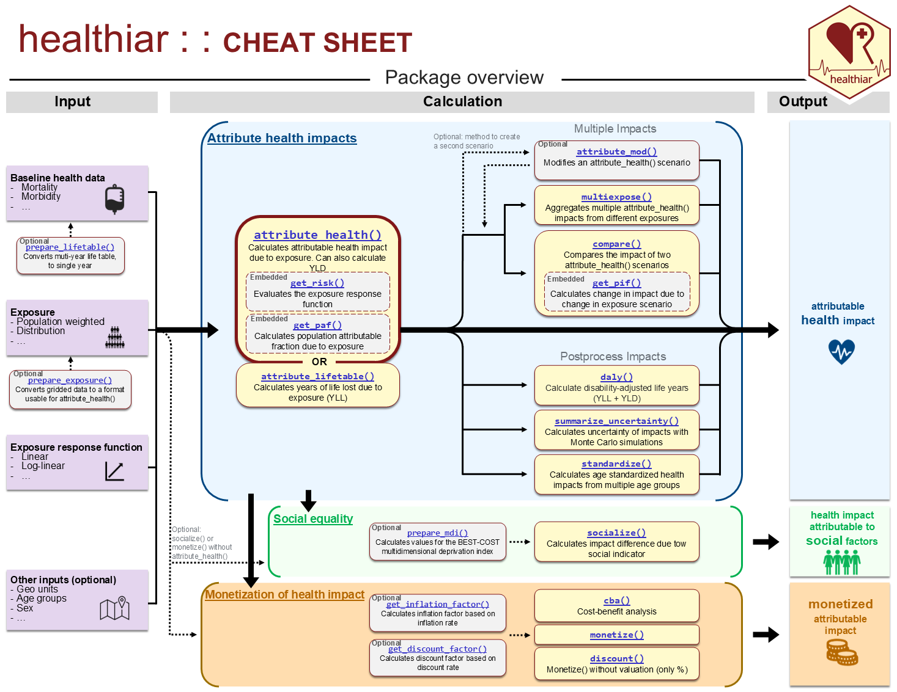
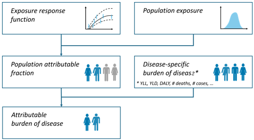
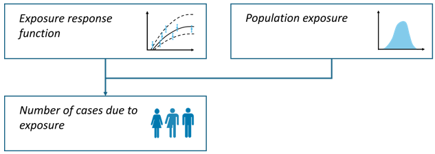
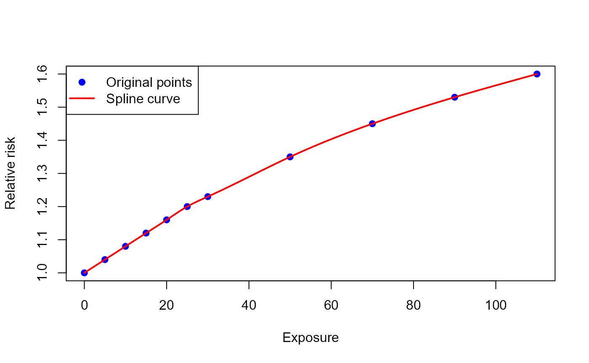
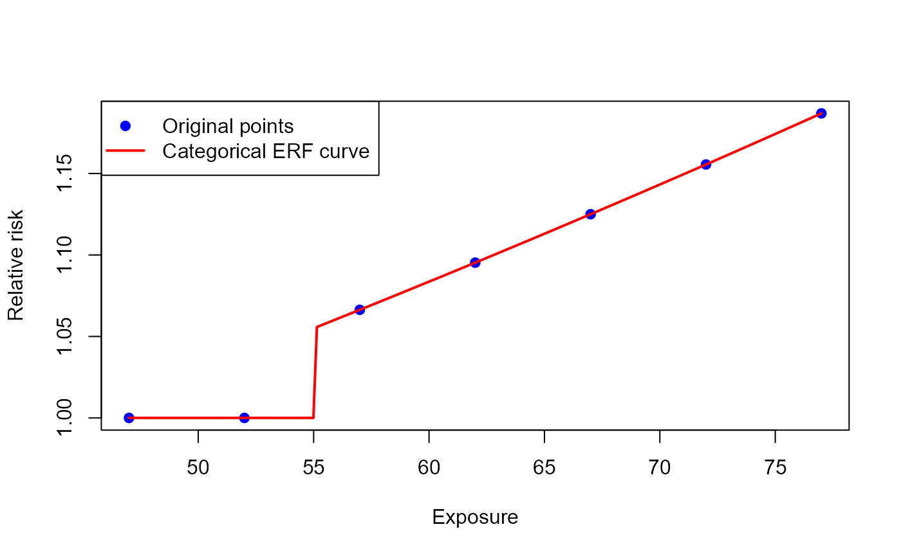
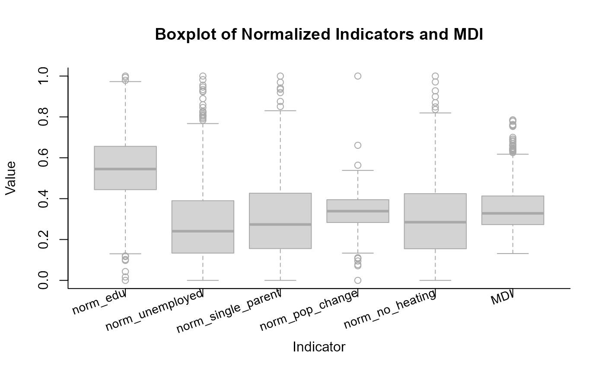
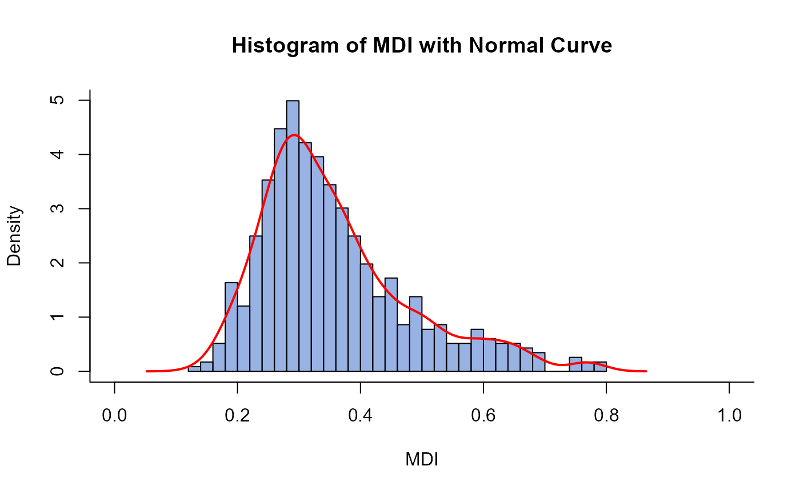

Hi there!
This vignette will tell you about healthiar and show you
how to use healthiar with the help of examples.
NOTE: Before using healthiar, please read
carefully the information provided in the readme
file or the welcome
webpage. By using healthiar, you agree to the terms
of use and disclaimer.
About healthiar
The healthiar functions allow you to quantify and
monetize the health impacts (or burden of disease) attributable to
exposure. The main focus of the EU project that initiated the
development of healthiar (BEST-COST) has been two
environmental exposures: air pollution and noise. However,
healthiar could be used for other exposures such as green
spaces, chemicals, physical activity…
See below a an overview of the healthiar, which is the
first page of the cheat
sheet. The whole list of functions included in
healthiar is linked there and available in the reference.

healthiar
Input & output data
Input
You can enter data in healthiar functions using: - hard
coded values or - columns inside pre-loaded data frames or tibbles.
Let’s see some examples calling the most important function in
healthiar: attribute_health().
Hard coded vs. columns
Hard coded
Depending on the function argument, you will need to enter numeric or character values.
results_pm_copd <- attribute_health(
exp_central = 8.85,
rr_central = 1.369,
rr_increment = 10,
erf_shape = "log_linear",
cutoff_central = 5,
bhd_central = 30747
)Columns
healthiar comes with some example data that start with
exdat_ that allow you to test functions. Some of these
example data will be used in some examples in this vignette.
Now let’s attribute_health() with input data from the
healthiar example data. Note that you can easily provide
input data to the function argument using the $
operator.
results_pm_copd <- attribute_health(
erf_shape = "log_linear",
rr_central = exdat_pm$relative_risk,
rr_increment = 10,
exp_central = exdat_pm$mean_concentration,
cutoff_central = exdat_pm$cut_off_value,
bhd_central = exdat_pm$incidence
)Tidy data
Be aware that healthiar functions are easier to use if
your data is prepared in a tidy format, i.e.:
Each variable is a column; each column is a variable.
Each observation is a row; each row is an observation.
Each value is a cell; each cell is a single value.
To know more about the concept of tidy format, see the article by (Wickham 2014).
For example, in attribute health() the length of the
input vectors to be entered in the arguments must be either 1 or the
result of the combinations of the different values of:
geo_id_microexp_...sexage(
infofor further sub-group analysis)
Output
Structure
The output of the healthiarfunction
attribute_health() and attribute_lifetable
consists of two lists (“folders”):
health_maincontains the main resultshealth_detailedcontained detailed results and additional info about the assessment.
In other healthiar functions you can find a similar
output structure but using different prefixes. E.g.,
social_in socialize() and
monetization_in monetitize().
Access
A similar structure can be found in other large functions in
helathiar, e.g., attribute_lifetable(),
compare(), socialize() or
monetize(). In some functions, different elements are
available in the output. For instance,
attribute_lifetable() creates additional output that is
specific to life table calculations.
There exist different, equivalent ways of accessing the output:
With
$operator:results_pm_copd$health_main$impact_rounded(as in the example above)By mouse: go to the Environment tab in RStudio and click on the variable you want to inspect, and then open the
health_mainresults tableWith
[[]]operatorresults_pm_copd[["health_main"]]With
pluck()&pull(): use thepurrr::pluckfunction to select a list and then thedplyr::pullfunction extract values from a specified column, e.g.results_pm_copd |> purrr::pluck("health_main") |> dplyr::pull("impact_rounded")
Function examples
The descriptions of the healthiar
functions provide examples that you can execute (with
healthiar loaded) by running
example("function_name"),
e.g. example("attribute_health"). In the sections below in
this vignette, you find additional examples and more detailed
explanations.
Relative risk
Methodology
The comparative risk assessment approach (C. J. Murray et al. 2003) is applied obtaining the population attributable fraction (percent of cases that are attributable to the exposure) based on the relative risk. The exposure scenario is compared with a counter-factual scenario.
This approach has been extensive documented and applied (e.g., WHO 2003; Steenland and Armstrong 2006; Soares et al. 2022; Pozzer et al. 2023; GBD 2019 Risk Factors Collaborators 2020; Lehtomäki et al. 2025).

Population attributable fraction
General integral form for the population attributable fraction (PAF):
Where:
= exposure level
= population distribution of exposure
= relative risk at exposure level compared to reference
Simplified for categorical exposure distribution
If exposure is categorical, the integrals are converted to sums:
Alternatively, an equivalent form is:
Simplified for single exposure value
If there is one single single exposure value, corresponding to the population weighted mean concentration, the equation can be simplified as follows:
#### Scaling relative risk How to get this relative risk at exposure
level (rr_at_exp)? This is normally different to the
relative risk published in the epidemiological literature
(rr) together with the (concentration/dose)
increment that corresponds to this relative risk. The
equations used for scaling relative risk depend on the chosen
exposure-response function shapes:
linear [Lehtomaki_2025_eh]
log-linear (Lehtomäki et al. 2025)
log-log (Lehtomäki et al. 2025)
linear-log (Pozzer et al. 2023)
The relative risk at exposure level (rr_at_exp) and is
part of the output of attribute_health() and
attribute_lifetable(). rr_at_exp can also be
calculated using get_risk().
For conversion of hazard ratios and/or odds ratios to relative risks refer to (VanderWeele 2019) and/or use the conversion tools developed by the Teaching group in EBM in 2022 for hazard ratios (https://ebm-helper.cn/en/Conv/HR_RR.html) and/or odds ratios (https://ebm-helper.cn/en/Conv/OR_RR.html).
Function call
results_pm_copd <- attribute_health(
approach_risk = "relative_risk", # If you do not call this argument, "relative_risk" will be assigned by default.
erf_shape = "log_linear",
rr_central = exdat_pm$relative_risk,
rr_increment = 10,
exp_central = exdat_pm$mean_concentration,
cutoff_central = exdat_pm$cut_off_value,
bhd_central = exdat_pm$incidence
)Main results
results_pm_copd$health_main
#> # A tibble: 1 × 24
#> geo_id_micro erf_ci exp_ci bhd_ci cutoff_ci exp_category sex age_group
#> <chr> <chr> <chr> <chr> <chr> <int> <chr> <chr>
#> 1 a central central central central 1 all all
#> # ℹ 16 more variables: impact <dbl>, impact_rounded <dbl>, approach_risk <chr>,
#> # rr_increment <dbl>, erf_shape <chr>, prop_pop_exp <dbl>, exp_length <int>,
#> # exp_type <chr>, exp <dbl>, bhd <dbl>, cutoff <dbl>, rr <dbl>,
#> # is_lifetable <lgl>, pop_fraction_type <chr>, rr_at_exp <dbl>,
#> # pop_fraction <dbl>It is a table of the format tibble of 3 rows and 23
columns. Be aware that this main output contains input data, some
intermediate steps and the final results in different formats.
Let’s zoom in on some relevant aspects.
results_pm_copd$health_main |>
dplyr::select(exp, bhd, rr, erf_ci, pop_fraction, impact_rounded) |>
knitr::kable() # For formatting reasons only: prints tibble in nice layout| exp | bhd | rr | erf_ci | pop_fraction | impact_rounded |
|---|---|---|---|---|---|
| 8.85 | 30747 | 1.369 | central | 0.1138961 | 3502 |
Interpretation: this table shows us that exposure was 8.85
,
the baseline health data (bhd_central) was 30747 (COPD
incidence in this instance). The 1st row further shows that the impact
attributable to this exposure using the central relative risk
(rr_central) estimate of 1.369 is 3502 COPD cases, or ~11%
of all baseline cases.
Some of the most results columns include:
- impact_rounded rounded attributable health impact/burden
- impact raw impact/burden
- pop_fraction population attributable fraction (PAF) or population impact fraction (PIF)
Absolute risk
Goal
E.g., to quantify the number incidence cases of high annoyance attributable to (road traffic) noise exposure.
Methodology
In the absolute risk calculation pathway, estimates are based on the size and distribution of the exposed population, rather than on baseline health data, as is the case in the relative risk pathway (WHO 2011).

Where:
= attributed cases
= absolute risk at category
= absolute population exposed at category
Function call
results_noise_ha <- attribute_health(
approach_risk = "absolute_risk", # default is "relative_risk"
exp_central = c(57.5, 62.5, 67.5, 72.5, 77.5), # mean of the exposure categories
pop_exp = c(387500, 286000, 191800, 72200, 7700), # population exposed per exposure category
erf_eq_central = "78.9270-3.1162*c+0.0342*c^2" # exposure-response function
)The erf_eq_central argument can digest other types of
functions (see section on user-defined ERF).
Results per noise exposure band
results_noise_ha$health_detailed$results_raw| exp_category | exp | pop_exp | impact |
|---|---|---|---|
| 1 | 57.5 | 387500 | 49674.594 |
| 2 | 62.5 | 286000 | 50788.595 |
| 3 | 67.5 | 191800 | 46813.105 |
| 4 | 72.5 | 72200 | 23657.232 |
| 5 | 77.5 | 7700 | 3298.314 |
Remember, that if the equation of the exposure-response function
(erf_eq_...) requires taking a maximum in a vectorised
context, pmax() must be used instead of max().
pmax() should be used whenever an element-wise maximum is
required (the output will be a vector), while max() returns
a single global maximum for the entire vector. For example:
erf_eq_central <-
"exp(0.2969*log((pmax(0,c-2.4)/1.9+1))/(1+exp(-(pmax(0,c-2.4)-12)/40.2)))" One exposure category
Alternatively, it’s also possible to only assess the absolute risk impacts for one exposure category (e.g., a single noise exposure band).
results_noise_ha <- attribute_health(
approach_risk = "absolute_risk",
exp_central = 57.5,
pop_exp = 387500,
erf_eq_central = "78.9270-3.1162*c+0.0342*c^2"
)| exp_category | impact |
|---|---|
| 1 | 49674.59 |
Multiple geographic units
using relative risk
Goal
E.g., to quantify the disease cases attributable to PM2.5 exposure in multiple cities using one single command.
Function call
Enter unique ID’s as a vector (
numericorcharacter) to thegeo_id_microargument (e.g., municipality names or province abbreviations)Optional: aggregate unit-specific results by providing higher-level ID’s (e.g., region names or country abbreviations) as a vector (
numericorcharacter) to thegeo_id_macroargument
Input to the other function arguments is specified as usual, either as a vector or a single values (which will be recycled to match the length of the other input vectors).
results_iteration <- attribute_health(
# Names of Swiss cantons
geo_id_micro = c("Zurich", "Basel", "Geneva", "Ticino", "Jura"),
# Names of languages spoken in the selected Swiss cantons
geo_id_macro = c("German","German","French","Italian","French"),
rr_central = 1.369,
rr_increment = 10,
cutoff_central = 5,
erf_shape = "log_linear",
exp_central = c(11, 11, 10, 8, 7),
bhd_central = c(4000, 2500, 3000, 1500, 500)
)In this example we want to aggregate the lower-level geographic units
(municipalities) by the higher-level language region
("German", "French", "Italian").
Main results
The main output contains aggregated results
| geo_id_macro | impact_rounded | erf_ci | exp_ci | bhd_ci |
|---|---|---|---|---|
| German | 1116 | central | central | central |
| French | 466 | central | central | central |
| Italian | 135 | central | central | central |
In this case health_main contains the cumulative /
summed number of stroke cases attributable to PM2.5 exposure in the 5
geo units, which is 1717 (using a relative risk of 1.369).
Detailed results
The geo unit-specific information and results are stored under
health_detailed>results_raw .
| geo_id_micro | impact_rounded | geo_id_macro |
|---|---|---|
| Zurich | 687 | German |
| Basel | 429 | German |
| Geneva | 436 | French |
| Ticino | 135 | Italian |
| Jura | 30 | French |
health_detailed also contains impacts obtained through
all combinations of input data central, lower and upper estimates (as
usual), besides the results per geo unit (not shown above).
using absolute risk
Goal
E.g., to quantify high annoyance cases attributable to noise exposure in rural and urban areas.
Function call
data <- exdat_noise |>
## Filter for urban and rural regions
dplyr::filter(region == "urban" | region == "rural")
results_iteration_ar <- attribute_health(
# Both the rural and urban areas belong to the higher-level "total" region
geo_id_macro = "total",
geo_id_micro = data$region,
approach_risk = "absolute_risk",
exp_central = data$exposure_mean,
pop_exp = data$exposed,
erf_eq_central = "78.9270-3.1162*c+0.0342*c^2"
)NOTE: the length of the input vectors fed to
geo_id_micro, exp_central,
pop_exp must match and must be
(number of geo units) x (number of exposure categories) = 2 x 5 = 10,
because we have 2 geo units ("rural" and
"urban") and 5 exposure categories.
Uncertainty
Confidence interval
Goal
E.g., to quantify the COPD cases attributable to PM2.5 exposure taking into account uncertainty (lower and upper bound of confidence interval) in several input arguments: relative risk, exposure and baseline health data.
Function call
results_pm_copd <- attribute_health(
erf_shape = "log_linear",
rr_central = 1.369,
rr_lower = 1.124, # lower 95% confidence interval (CI) bound of RR
rr_upper = 1.664, # upper 95% CI bound of RR
rr_increment = 10,
exp_central = 8.85,
exp_lower = 8, # lower 95% CI bound of exposure
exp_upper = 10, # upper 95% CI bound of exposure
cutoff_central = 5,
bhd_central = 30747,
bhd_lower = 28000, # lower 95% confidence interval estimate of BHD
bhd_upper = 32000 # upper 95% confidence interval estimate of BHD
) Detailed results
Let’s inspect the detailed results:
| erf_ci | exp_ci | bhd_ci | impact_rounded |
|---|---|---|---|
| central | central | central | 3502 |
| lower | central | central | 1353 |
| upper | central | central | 5474 |
| central | central | lower | 3189 |
| lower | central | lower | 1232 |
| upper | central | lower | 4985 |
| central | central | upper | 3645 |
| lower | central | upper | 1408 |
| upper | central | upper | 5697 |
Each row contains the estimated attributable cases
(impact_rounded) obtained by the input data specified in
the columns ending in “_ci” and the other calculation pathway
specifications in that row (not shown).
The 1st contains the estimated attributable impact when using the central estimates of relative risk, exposure and baseline health data.
The 2nd row shows the impact when using the central estimates of the relative risk, exposure in combination with the lower estimate of the baseline health data.
…
NOTE: only 9 of the 27 possible combinations are displayed due to space constraints.
NOTE: only a selection of columns are shown.
Monte Carlo simulation
Goal
E.g., to summarize uncertainty of attributable health impacts (i.e. to get a single confidence interval instead of many combinations) by using a Monte Carlo simulation.
Methodology
General concepts
A Monte Carlo simulation is a statistical method that generates
repeated random sampling [Robert and Casella
(2004); Rubinstein and Kroese
(2016). In healthiar, you can use the function
summarize_uncertainty() to simulate values in the arguments
with uncertainty and estimate a single confidence interval in the
results.
For each entered input argument that includes a (95%) confidence
interval (i.e. _lower and _upper bound value)
a distribution is fitted (see distributions below). The median of the
simulated attributable impacts is reported as the central estimate. The
2.5th and 97.5th percentiles of these simulated impacts define the lower
and upper bounds of the 95% summary uncertainty interval. Aggregated
central, lower and upper estimates are obtained by summing the
corresponding values of each lower level unit.
Distributions used for simulation
summarize_uncertainty() assumes the following shapes of
the distributions in the simulations:
Relative risk: The values are simulated based on an optimized gamma distribution, which fits well as relative risks are positive and their distributions are usually right-skewed. The gamma distribution is parametrized such that its mean is equal to the central relative risk estimate (
rate= shape/rr_central). The shape parameter is then optimized usingstats::optimize()to match the inputed 95% confidence interval bounds, withstats::qgamma()used to evaluate candidate distributions. Finally,n_simrelative risk values are simulated usingstats::rgamma().Exposure, cutoff, baseline health data and duration: The values are simulated based on a normal distribution using
stats::rnorm()withmean = exp_central,mean = cutoff_central,mean = bhd_centralormean = duration_centraland a standard deviation based on corresponding lower and upper 95% exposure confidence interval values. The standard deviation is calculated as , since for a normal distribution the 95% CI spans approximately two standard deviations on either side of the mean.Disability weights: The values are simulated based on a beta distribution, as both the disability weights and the beta distribution are bounded by 0 and 1. The beta distribution best fitting the inputted central disability weight estimate and corresponding lower and upper 95% confidence interval values is fitted using
stats::qbeta()(the best fitting distribution parametersshape1andshape2are determined usingstats::optimize()). For this purpose, we partly adapted the R functionprevalence::beta_expertwith permission of one of the authors (Devleesschauwer et al. 2022). Finally,n_simdisability weight values are simulated usingstats::rbeta().
For stability of the 95% confidence interval, a large number of simulations (e.g., 10,000) is recommended in practice. The example below uses n_sim = 100 for brevity.
Function call
results_pm_copd_summarized <-
summarize_uncertainty(
output_attribute = results_pm_copd,
n_sim = 100
)Main results
The outcome of the Monte Carlo analysis is added to the variable
entered as the results argument, which is
results_pm_copd in our case.
Two lists (“folders”) are added:
uncertainty_maincontains the central estimate and the corresponding 95% confidence intervals obtained through the Monte Carlo assessment anduncertainty_detailedcontains alln_simsimulations of the Monte Carlo assessment.
| geo_id_micro | impact_ci | impact | impact_rounded |
|---|---|---|---|
| a | central_estimate | 3654.885 | 3655 |
| a | lower_estimate | 1589.442 | 1589 |
| a | upper_estimate | 5600.248 | 5600 |
Detailed results
The folder uncertainty_detailed contains all single
simulations. Let’s look at the impact of the first 10 simulations.
The columns erf_ci, exp_ci,
bhd_ci, and cutoff_ci indicate the source of
uncertainty component used for that simulation (in the first 10
simulations, all use central estimates).
| geo_id_micro | erf_ci | exp_ci | bhd_ci | cutoff_ci | exp_category | sex | age_group | sim_id | impact | impact_rounded | approach_risk | rr_increment | erf_shape | prop_pop_exp | exp_length | exp_type | cutoff | is_lifetable | geo_id_number | rr | exp | bhd | pop_fraction_type | rr_at_exp | pop_fraction |
|---|---|---|---|---|---|---|---|---|---|---|---|---|---|---|---|---|---|---|---|---|---|---|---|---|---|
| a | central | central | central | central | 1 | all | all | 1 | 2629.951 | 2630 | relative_risk | 10 | log_linear | 1 | 1 | population_weighted_mean | 5 | FALSE | 1 | 1.276850 | 8.740519 | 30103.82 | paf | 1.095725 | 0.0873627 |
| a | central | central | central | central | 1 | all | all | 2 | 4628.066 | 4628 | relative_risk | 10 | log_linear | 1 | 1 | population_weighted_mean | 5 | FALSE | 1 | 1.551852 | 8.758388 | 30399.07 | paf | 1.179584 | 0.1522437 |
| a | central | central | central | central | 1 | all | all | 3 | 4493.994 | 4494 | relative_risk | 10 | log_linear | 1 | 1 | population_weighted_mean | 5 | FALSE | 1 | 1.543406 | 8.798881 | 29566.80 | paf | 1.179238 | 0.1519946 |
| a | central | central | central | central | 1 | all | all | 4 | 4474.906 | 4475 | relative_risk | 10 | log_linear | 1 | 1 | population_weighted_mean | 5 | FALSE | 1 | 1.419867 | 9.213612 | 32586.97 | paf | 1.159181 | 0.1373219 |
| a | central | central | central | central | 1 | all | all | 5 | 1650.331 | 1650 | relative_risk | 10 | log_linear | 1 | 1 | population_weighted_mean | 5 | FALSE | 1 | 1.157613 | 8.812466 | 30409.10 | paf | 1.057385 | 0.0542710 |
| a | central | central | central | central | 1 | all | all | 6 | 3728.251 | 3728 | relative_risk | 10 | log_linear | 1 | 1 | population_weighted_mean | 5 | FALSE | 1 | 1.430150 | 8.830799 | 29108.69 | paf | 1.146895 | 0.1280803 |
| a | central | central | central | central | 1 | all | all | 7 | 3879.688 | 3880 | relative_risk | 10 | log_linear | 1 | 1 | population_weighted_mean | 5 | FALSE | 1 | 1.465879 | 8.502208 | 30948.22 | paf | 1.143328 | 0.1253606 |
| a | central | central | central | central | 1 | all | all | 8 | 3917.858 | 3918 | relative_risk | 10 | log_linear | 1 | 1 | population_weighted_mean | 5 | FALSE | 1 | 1.442681 | 8.684553 | 31015.55 | paf | 1.144583 | 0.1263191 |
| a | central | central | central | central | 1 | all | all | 9 | 3038.873 | 3039 | relative_risk | 10 | log_linear | 1 | 1 | population_weighted_mean | 5 | FALSE | 1 | 1.320146 | 8.880695 | 29741.04 | paf | 1.113806 | 0.1021778 |
| a | central | central | central | central | 1 | all | all | 10 | 2145.128 | 2145 | relative_risk | 10 | log_linear | 1 | 1 | population_weighted_mean | 5 | FALSE | 1 | 1.253879 | 8.549538 | 27799.07 | paf | 1.083618 | 0.0771655 |
User-defined ERF
Goal
E.g., to quantify COPD cases attributable to air pollution exposure by applying a user-defined exposure-response function (ERF), such as the MR-BRT curves from Global Burden of Disease study.
Function call
In this case, the function arguments erf_eq_... require
a function as input, so we use an auxiliary function
(splinefun()) to transform the points on the ERF into type
function.
results_pm_copd_mr_brt <- attribute_health(
exp_central = 8.85,
bhd_central = 30747,
cutoff_central = 0,
# Specify the function based on x-y point pairs that lie on the ERF
erf_eq_central = splinefun(
x = c(0, 5, 10, 15, 20, 25, 30, 50, 70, 90, 110),
y = c(1.00, 1.04, 1.08, 1.12, 1.16, 1.20, 1.23, 1.35, 1.45, 1.53, 1.60),
method = "natural")
)The ERF curve created looks as follows

Alternatively, other functions (e.g. approxfun()) can be
used to create the ERF
Sub-group analysis
by age group
Function call
To obtain age-group-specific results, the baseline health data (and possibly exposure) must be available by age group.
If the age argument was specified, age-group-specific
results are available under health_detailed in the
sub-folder results_by_age_group.
results_age_group <- attribute_health(
approach_risk = "relative_risk",
age = c("below_65", "65_plus"),
exp_central = c(8, 7),
cutoff_central = c(5, 5),
bhd_central = c(1000, 5000),
rr_central = 1.06,
rr_increment = 10,
erf_shape = "log_linear"
)by sex
Function call
The baseline health data (and possibly exposure) must be entered by sex.
results_sex <- attribute_health(
approach_risk = "relative_risk",
sex = c("female", "male"),
exp_central = c(8, 8),
cutoff_central = c(5, 5),
bhd_central = c(1000, 1100),
rr_central = 1.06,
rr_increment = 10,
erf_shape = "log_linear"
)Results by sex
If the sex argument was specified, sex-specific results
are available under health_detailed in the sub-folder
results_by_sex.
results_sex$health_detailed$results_by_sex |>
dplyr::select(sex, impact_rounded, exp, bhd) |>
knitr::kable()| sex | impact_rounded | exp | bhd |
|---|---|---|---|
| female | 17 | 8 | 1000 |
| male | 19 | 8 | 1100 |
by other sub-groups
Goal
E.g., to quantify attributable health impacts stratified by a sub-group different to age and sex, e.g., education level.
Function call
A single vector (or a data frame / tibble with multiple columns) to
group the results by can be entered to the info argument.
In this example, this will be information about the education level.
In a second step one can group the results based on one or more columns and so summarize the results by the preferred sub-groups.
output_attribute <- healthiar::attribute_health(
rr_central = 1.063,
rr_increment = 10,
erf_shape = "log_linear",
cutoff_central = 0,
exp_central = c(6, 7, 8,
7, 8, 9,
8, 9, 10,
9, 10, 11),
bhd_central = c(600, 700, 800,
700, 800, 900,
800, 900, 1000,
900, 1000, 1100),
geo_id_micro = rep(c("a", "b", "c", "d"), each = 3),
info = data.frame(
education = rep(c("secondary", "bachelor", "master"), times = 4)) # education level
)by age, sex and other sub-groups
Goal
E.g., to quantify attributable health impacts stratified by age, sex and additional sub-group e.g. education level.
Function call
output_attribute <- healthiar::attribute_health(
rr_central = 1.063,
rr_increment = 10,
erf_shape = "log_linear",
cutoff_central = 0,
age_group = base::rep(c("50_and_younger", "50_plus"), each = 4, times= 2),
sex = base::rep(c("female", "male"), each = 2, times = 4),
exp_central = c(6, 7, 8, 7, 8, 9, 8, 9,
10, 9, 10, 11, 10, 11, 12, 13),
bhd_central = c(600, 700, 800, 700, 800, 900, 800, 900,
1000, 900, 1000, 1100, 1000, 1100, 1200, 1000),
geo_id_micro = base::rep(c("a", "b"), each = 8),
info = base::data.frame(
education = base::rep(c("without_master", "with_master"), times = 8)) # education level
)YLL & deaths with life table
YLL
Goal
E.g., to quantify the years of life lost (YLL) due to deaths from COPD attributable to PM2.5 exposure during one year.
Methodology
Data preparation
The life table approach to obtain YLL and deaths requires population and baseline mortality data to be stratified by one year age groups. However, in some cases these data are only available for larger age groups (e.g., 5-year data: 0-4 years old, 5-9 years old, …). What to do?
If your population and mortality data are not available by one-year age group, your data must be prepared by interpolating values. The
healthiarfunctionprepare_lifetable()makes this conversion using the same approach as the WHO tool AirQ+ (WHO 2020).If your population and death data are stratified by one-year age group, you are lucky, you can ignore this initial step.
General concept
The life table methodology of attribute_lifetable()
follows that of the WHO tool AirQ+ (WHO
2020), which is described in more detail by B. G. Miller and Hurley (2003).
In short, two scenarios are compared:
a scenario with the exposure level specified in the function (“exposed scenario”) and
a scenario with no exposure (“unexposed scenario”).
First, the entry and mid-year populations of the (first) year of analysis in the unexposed scenario is determined using modified survival probabilities. Second, age-specific population projections using scenario-specific survival probabilities are done for both scenarios. Third, by subtracting the populations in the unexposed scenario from the populations in the exposed scenario the premature deaths/years of life lost attributable to the exposure are determined.
An expansive life table case study for is available in a report of Brian G. Miller (2010).
Determination of populations in the (first) year of analysis
Entry population
The entry (i.e. start of year) populations in both scenarios (exposed and unexposed) is determined as follows:
Survival probabilities
Exposed scenario
The survival probabilities in the exposed scenario from start of year to start of year are calculated as follows:
Analogously, the probability of survival from start of year to mid-year :
Unexposed scenario
The survival probabilities in the unexposed scenario are calculated as follows:
First, the age-group specific hazard rate in the exposed scenario is calculated using the inputted age-specific mid-year populations and deaths.
Second, the hazard rate is multiplied with the modification factor () to obtain the age-specific hazard rate in the unexposed scenario.
Third, the the age-specific survival probabilities (from the start until the end in a given age group) in the unexposed scenario are calculated as follows (cf. Miller & Hurley 2003):
Mid-year population
The mid-year populatios of the (first) year of analysis (year_1) in the unexposed scenario are determined as follows:
First, the survival probabilities from start of year to mid-year in the unexposed scenario is calculated as:
Second, the mid-year populations of the (first) year of analysis (year_1) in the unexposed scenario is calculated:
Population projection
Using the age group-specific and scenario-specific survival probabilities calculated above, future populations of each age-group under each scenario are calculated.
Exposed scenario
The population projections for the two possible options of
approach_exposure ("single_year" and
"constant") for the unexposed scenario are different. In
the case of "single_year" exposure, the population
projection for the years after the year of exposure is the same as in
the unexposed scenario.
In the case of "constant" the population projection is
done as follows:
First, the entry population of year is calculated (which is the same as the end of year population of year ) using the entry population of year .
Second, the mid-year population of year is calculated.
Unexposed scenario
The entry and mid-year population projections of in the exposed scenario is done as follows:
First, the entry population of year is calculated (which is the same as the end of year population of year ) by multiplying the entry population of year and the modified survival probabilities.
Second, the mid-year population of year is calculated.
Function call
We can use attribute_lifetable() combined with life
table input data to determine YLL attributable to an environmental
stressor.
results_pm_yll <- attribute_lifetable(
year_of_analysis = 2019,
health_outcome = "yll",
rr_central = 1.118,
rr_increment = 10,
erf_shape = "log_linear",
exp_central = 8.85,
cutoff_central = 5,
min_age = 20, # age from which population is affected by the exposure
# Life table information
age_group = exdat_lifetable$age_group,
sex = exdat_lifetable$sex,
population = exdat_lifetable$midyear_population,
# In the life table case, BHD refers to deaths
bhd_central = exdat_lifetable$deaths
) Main results
Total YLL attributable to exposure (sum of sex-specific impacts).
| impact_rounded | erf_ci | exp_ci | bhd_ci |
|---|---|---|---|
| 28810 | central | central | central |
Use the two arguments approach_exposure and
approach_newborns to modify the life table calculation:
-
approach_exposure"single_year"(default) population is exposed for a single year and the impacts of that exposure are calculated"constant"population is exposed every year
-
approach_newborns"without_newborns"(default) assumes that the population in the year of analysis is followed over time, without considering newborns being born"with_newborns"assumes that for each year after the year of analysis n babies are born, with n being equal to the (male and female) population aged 0 that is provided in the argument population
Detailed results
Attributable YLL results
per year
per age (group)
per sex (if sex-specific life table data entered)
are available.
Note: We will inspect the results for females; male results are also available.
Results per year
NOTE: only a selection of years is shown.
results_pm_yll$health_detailed$results_raw |>
dplyr::summarize(
.by = year,
impact = sum(impact, na.rm = TRUE)
)
#> # A tibble: 100 × 2
#> year impact
#> <chr> <dbl>
#> 1 2019 1300.
#> 2 2020 2422.
#> 3 2021 2221.
#> 4 2022 2033.
#> 5 2023 1858.
#> 6 2024 1695.
#> 7 2025 1545.
#> 8 2026 1409.
#> 9 2027 1284.
#> 10 2028 1171.
#> # ℹ 90 more rows
results_pm_yll$health_detailed$results_raw |>
dplyr::summarize(
.by = year,
impact = sum(impact, na.rm = TRUE)) |>
knitr::kable()| year | impact |
|---|---|
| 2019 | 1299.683 |
| 2020 | 2421.604 |
| 2021 | 2221.148 |
| 2022 | 2032.978 |
| 2023 | 1857.582 |
| 2024 | 1694.959 |
| 2025 | 1545.430 |
| 2026 | 1408.650 |
| 2027 | 1284.054 |
| 2028 | 1170.668 |
YLL
| age_start | age_end | impact_2019 |
|---|---|---|
| 91 | 92 | 29.480668 |
| 92 | 93 | 27.542091 |
| 93 | 94 | 25.166285 |
| 94 | 95 | 22.111703 |
| 95 | 96 | 18.514777 |
| 96 | 97 | 14.505077 |
| 97 | 98 | 11.222461 |
| 98 | 99 | 8.170093 |
| 99 | 100 | 31.772534 |
Population (baseline scenario)
Baseline scenario refers to the scenario with exposure (i.e. the scenario specified in the assessment).
| age_start | midyear_population_2019 | midyear_population_2020 | midyear_population_2021 | midyear_population_2022 |
|---|---|---|---|---|
| 91 | 10560 | 10980.4178 | 11536.8448 | 11815.045 |
| 92 | 8728 | 9105.4297 | 9498.3206 | 9979.643 |
| 93 | 7140 | 7377.6106 | 7725.1173 | 8058.449 |
| 94 | 5655 | 5910.7546 | 6133.2128 | 6422.105 |
| 95 | 4332 | 4582.9334 | 4813.1037 | 4994.250 |
| 96 | 3118 | 3436.4582 | 3654.9171 | 3838.479 |
| 97 | 2234 | 2419.2261 | 2682.1499 | 2852.657 |
| 98 | 1520 | 1695.7730 | 1848.4164 | 2049.304 |
| 99 | 2246 | 879.8714 | 988.6583 | 1077.651 |
Population (unexposed scenario)
Impacted scenario refers to the scenario without exposure.
| age_start | midyear_population_2019 | midyear_population_2020 | midyear_population_2021 | midyear_population_2022 |
|---|---|---|---|---|
| 91 | 10589.481 | 11037.9003 | 11589.268 | 11861.323 |
| 92 | 8755.542 | 9160.1507 | 9548.044 | 10024.990 |
| 93 | 7165.166 | 7428.2700 | 7771.543 | 8100.635 |
| 94 | 5677.112 | 5956.6019 | 6175.327 | 6460.700 |
| 95 | 4350.515 | 4622.8492 | 4850.437 | 5028.544 |
| 96 | 3132.505 | 3469.5619 | 3686.750 | 3868.253 |
| 97 | 2245.222 | 2444.9150 | 2707.987 | 2877.502 |
| 98 | 1528.170 | 1715.4685 | 1868.044 | 2069.045 |
| 99 | 2277.773 | 890.9436 | 1000.141 | 1089.095 |
Deaths
Goal (e.g.)
E.g., to determine premature deaths from COPD attributable to PM2.5 exposure during one year.
Function call
See example on YLL for additional info on
attribute_lifetable() calculations and its output.
results_pm_deaths <- attribute_lifetable(
health_outcome = "deaths",
year_of_analysis = 2019,
rr_central = 1.118,
rr_increment = 10,
erf_shape = "log_linear",
exp_central = 8.85,
cutoff_central = 5,
min_age = 20, # age from which population is affected by the exposure
# Life table information
age_group = exdat_lifetable$age_group,
sex = exdat_lifetable$sex,
population = exdat_lifetable$midyear_population,
bhd_central = exdat_lifetable$deaths
)Main results
Total premature deaths attributable to exposure (sum of sex-specific impacts).
| impact_rounded | erf_ci | exp_ci | bhd_ci |
|---|---|---|---|
| 2599 | central | central | central |
Detailed results
Attributable premature deaths results
per year (if argument
approach_exposure = "constant")per age (group)
per sex (if sex-specific life table data entered)
are available.
Note: we will inspect the results for females; male results are also available.
Note: because we set the function argument
approach_exposure = "constant" in the function call results
are available for one year (the year of analysis).
| yoa | age_group | age_start | age_end | bhd | deaths | population | modification_factor | prob_survival | prob_survival_until_midyear | hazard_rate | age_end_over_min_age | prob_survival_mod | prob_survival_until_midyear_mod | hazard_rate_mod | midyear_population_2019 | entry_population_2019 | end_population_2019 | deaths_2019 | entry_population_2020 | midyear_population_2020 | midyear_population_2021 | midyear_population_2022 | midyear_population_2023 | midyear_population_2024 | midyear_population_2025 | midyear_population_2026 | midyear_population_2027 | midyear_population_2028 | midyear_population_2029 | midyear_population_2030 | midyear_population_2031 | midyear_population_2032 | midyear_population_2033 | midyear_population_2034 | midyear_population_2035 | midyear_population_2036 | midyear_population_2037 | midyear_population_2038 | midyear_population_2039 | midyear_population_2040 | midyear_population_2041 | midyear_population_2042 | midyear_population_2043 | midyear_population_2044 | midyear_population_2045 | midyear_population_2046 | midyear_population_2047 | midyear_population_2048 | midyear_population_2049 | midyear_population_2050 | midyear_population_2051 | midyear_population_2052 | midyear_population_2053 | midyear_population_2054 | midyear_population_2055 | midyear_population_2056 | midyear_population_2057 | midyear_population_2058 | midyear_population_2059 | midyear_population_2060 | midyear_population_2061 | midyear_population_2062 | midyear_population_2063 | midyear_population_2064 | midyear_population_2065 | midyear_population_2066 | midyear_population_2067 | midyear_population_2068 | midyear_population_2069 | midyear_population_2070 | midyear_population_2071 | midyear_population_2072 | midyear_population_2073 | midyear_population_2074 | midyear_population_2075 | midyear_population_2076 | midyear_population_2077 | midyear_population_2078 | midyear_population_2079 | midyear_population_2080 | midyear_population_2081 | midyear_population_2082 | midyear_population_2083 | midyear_population_2084 | midyear_population_2085 | midyear_population_2086 | midyear_population_2087 | midyear_population_2088 | midyear_population_2089 | midyear_population_2090 | midyear_population_2091 | midyear_population_2092 | midyear_population_2093 | midyear_population_2094 | midyear_population_2095 | midyear_population_2096 | midyear_population_2097 | midyear_population_2098 | midyear_population_2099 | midyear_population_2100 | midyear_population_2101 | midyear_population_2102 | midyear_population_2103 | midyear_population_2104 | midyear_population_2105 | midyear_population_2106 | midyear_population_2107 | midyear_population_2108 | midyear_population_2109 | midyear_population_2110 | midyear_population_2111 | midyear_population_2112 | midyear_population_2113 | midyear_population_2114 | midyear_population_2115 | midyear_population_2116 | midyear_population_2117 | midyear_population_2118 | entry_population_2021 | entry_population_2022 | entry_population_2023 | entry_population_2024 | entry_population_2025 | entry_population_2026 | entry_population_2027 | entry_population_2028 | entry_population_2029 | entry_population_2030 | entry_population_2031 | entry_population_2032 | entry_population_2033 | entry_population_2034 | entry_population_2035 | entry_population_2036 | entry_population_2037 | entry_population_2038 | entry_population_2039 | entry_population_2040 | entry_population_2041 | entry_population_2042 | entry_population_2043 | entry_population_2044 | entry_population_2045 | entry_population_2046 | entry_population_2047 | entry_population_2048 | entry_population_2049 | entry_population_2050 | entry_population_2051 | entry_population_2052 | entry_population_2053 | entry_population_2054 | entry_population_2055 | entry_population_2056 | entry_population_2057 | entry_population_2058 | entry_population_2059 | entry_population_2060 | entry_population_2061 | entry_population_2062 | entry_population_2063 | entry_population_2064 | entry_population_2065 | entry_population_2066 | entry_population_2067 | entry_population_2068 | entry_population_2069 | entry_population_2070 | entry_population_2071 | entry_population_2072 | entry_population_2073 | entry_population_2074 | entry_population_2075 | entry_population_2076 | entry_population_2077 | entry_population_2078 | entry_population_2079 | entry_population_2080 | entry_population_2081 | entry_population_2082 | entry_population_2083 | entry_population_2084 | entry_population_2085 | entry_population_2086 | entry_population_2087 | entry_population_2088 | entry_population_2089 | entry_population_2090 | entry_population_2091 | entry_population_2092 | entry_population_2093 | entry_population_2094 | entry_population_2095 | entry_population_2096 | entry_population_2097 | entry_population_2098 | entry_population_2099 | entry_population_2100 | entry_population_2101 | entry_population_2102 | entry_population_2103 | entry_population_2104 | entry_population_2105 | entry_population_2106 | entry_population_2107 | entry_population_2108 | entry_population_2109 | entry_population_2110 | entry_population_2111 | entry_population_2112 | entry_population_2113 | entry_population_2114 | entry_population_2115 | entry_population_2116 | entry_population_2117 | entry_population_2118 | deaths_2020 | deaths_2021 | deaths_2022 | deaths_2023 | deaths_2024 | deaths_2025 | deaths_2026 | deaths_2027 | deaths_2028 | deaths_2029 | deaths_2030 | deaths_2031 | deaths_2032 | deaths_2033 | deaths_2034 | deaths_2035 | deaths_2036 | deaths_2037 | deaths_2038 | deaths_2039 | deaths_2040 | deaths_2041 | deaths_2042 | deaths_2043 | deaths_2044 | deaths_2045 | deaths_2046 | deaths_2047 | deaths_2048 | deaths_2049 | deaths_2050 | deaths_2051 | deaths_2052 | deaths_2053 | deaths_2054 | deaths_2055 | deaths_2056 | deaths_2057 | deaths_2058 | deaths_2059 | deaths_2060 | deaths_2061 | deaths_2062 | deaths_2063 | deaths_2064 | deaths_2065 | deaths_2066 | deaths_2067 | deaths_2068 | deaths_2069 | deaths_2070 | deaths_2071 | deaths_2072 | deaths_2073 | deaths_2074 | deaths_2075 | deaths_2076 | deaths_2077 | deaths_2078 | deaths_2079 | deaths_2080 | deaths_2081 | deaths_2082 | deaths_2083 | deaths_2084 | deaths_2085 | deaths_2086 | deaths_2087 | deaths_2088 | deaths_2089 | deaths_2090 | deaths_2091 | deaths_2092 | deaths_2093 | deaths_2094 | deaths_2095 | deaths_2096 | deaths_2097 | deaths_2098 | deaths_2099 | deaths_2100 | deaths_2101 | deaths_2102 | deaths_2103 | deaths_2104 | deaths_2105 | deaths_2106 | deaths_2107 | deaths_2108 | deaths_2109 | deaths_2110 | deaths_2111 | deaths_2112 | deaths_2113 | deaths_2114 | deaths_2115 | deaths_2116 | deaths_2117 | deaths_2118 |
|---|---|---|---|---|---|---|---|---|---|---|---|---|---|---|---|---|---|---|---|---|---|---|---|---|---|---|---|---|---|---|---|---|---|---|---|---|---|---|---|---|---|---|---|---|---|---|---|---|---|---|---|---|---|---|---|---|---|---|---|---|---|---|---|---|---|---|---|---|---|---|---|---|---|---|---|---|---|---|---|---|---|---|---|---|---|---|---|---|---|---|---|---|---|---|---|---|---|---|---|---|---|---|---|---|---|---|---|---|---|---|---|---|---|---|---|---|---|---|---|---|---|---|---|---|---|---|---|---|---|---|---|---|---|---|---|---|---|---|---|---|---|---|---|---|---|---|---|---|---|---|---|---|---|---|---|---|---|---|---|---|---|---|---|---|---|---|---|---|---|---|---|---|---|---|---|---|---|---|---|---|---|---|---|---|---|---|---|---|---|---|---|---|---|---|---|---|---|---|---|---|---|---|---|---|---|---|---|---|---|---|---|---|---|---|---|---|---|---|---|---|---|---|---|---|---|---|---|---|---|---|---|---|---|---|---|---|---|---|---|---|---|---|---|---|---|---|---|---|---|---|---|---|---|---|---|---|---|---|---|---|---|---|---|---|---|---|---|---|---|---|---|---|---|---|---|---|---|---|---|---|---|---|---|---|---|---|---|---|---|---|---|---|---|---|---|---|---|---|---|---|---|---|---|---|---|---|---|---|---|---|---|---|---|---|---|
| 2019 | 91 | 91 | 92 | 1498 | 1498 | 10560 | 0.9579656 | 0.8675391 | 0.9337696 | 0.1418561 | TRUE | 0.8727528 | 0.9363764 | 0.1358932 | 10589.481 | 11309.0 | 9869.961 | 1439.0387 | 11787.888 | 11037.9003 | 11589.268 | 11861.323 | 11991.477 | 12265.850 | 12512.888 | 12769.668 | 12923.628 | 12937.782 | 13087.942 | 13493.406 | 13781.906 | 14395.083 | 15234.221 | 15942.155 | 16503.722 | 16736.242 | 17144.305 | 17523.206 | 17615.762 | 17563.740 | 17487.849 | 17327.801 | 17396.479 | 17724.984 | 18021.187 | 18497.456 | 19086.121 | 19752.285 | 20340.322 | 21046.251 | 21864.815 | 22561.281 | 23299.067 | 24167.730 | 25051.954 | 25223.832 | 25088.811 | 24970.171 | 24737.928 | 24460.360 | 23918.913 | 23464.843 | 22946.050 | 22309.247 | 21967.734 | 21705.628 | 21616.207 | 21709.437 | 21762.433 | 21960.537 | 22410.913 | 22674.269 | 22790.852 | 22667.517 | 22513.809 | 22624.072 | 22594.616 | 22384.888 | 22414.277 | 22338.820 | 22005.184 | 21654.820 | 21071.478 | 20152.307 | 19055.507 | 18337.577 | 17892.410 | 17392.955 | 16780.243 | 16401.199 | 16167.398 | 15569.439 | 14925.742 | 14821.967 | 14890.031 | 14965.530 | 14935.964 | 15055.898 | 15266.562 | 15439.292 | 15679.316 | 15705.345 | 15577.437 | 15590.451 | 15724.301 | 15885.290 | 16009.468 | 16006.122 | 15860.208 | 15449.662 | NA | NA | NA | NA | NA | NA | NA | NA | 12376.719 | 12667.259 | 12806.257 | 13099.273 | 13363.097 | 13637.323 | 13801.745 | 13816.861 | 13977.223 | 14410.237 | 14718.340 | 15373.180 | 16269.335 | 17025.370 | 17625.094 | 17873.413 | 18309.203 | 18713.849 | 18812.693 | 18757.137 | 18676.089 | 18505.166 | 18578.511 | 18929.336 | 19245.666 | 19754.295 | 20382.958 | 21094.386 | 21722.378 | 22476.272 | 23350.455 | 24094.243 | 24882.160 | 25809.845 | 26754.149 | 26937.706 | 26793.510 | 26666.809 | 26418.787 | 26122.358 | 25544.122 | 25059.199 | 24505.156 | 23825.085 | 23460.367 | 23180.452 | 23084.955 | 23184.520 | 23241.117 | 23452.681 | 23933.658 | 24214.908 | 24339.414 | 24207.698 | 24043.546 | 24161.302 | 24129.843 | 23905.866 | 23937.251 | 23856.668 | 23500.362 | 23126.191 | 22503.214 | 21521.588 | 20350.264 | 19583.553 | 19108.139 | 18574.747 | 17920.403 | 17515.605 | 17265.918 | 16627.330 | 15939.896 | 15829.069 | 15901.758 | 15982.387 | 15950.812 | 16078.895 | 16303.874 | 16488.339 | 16744.673 | 16772.470 | 16635.871 | 16649.769 | 16792.714 | 16964.642 | 17097.257 | 17093.684 | 16937.855 | 16499.414 | NA | NA | NA | NA | NA | NA | NA | NA | 1499.9759 | 1574.9029 | 1611.8734 | 1629.5605 | 1666.8460 | 1700.4167 | 1735.3113 | 1756.2335 | 1758.1569 | 1778.5626 | 1833.6625 | 1872.8677 | 1956.1943 | 2070.2274 | 2166.4308 | 2242.7440 | 2274.3419 | 2329.7949 | 2381.2850 | 2393.8627 | 2386.793 | 2376.480 | 2354.731 | 2364.064 | 2408.705 | 2448.957 | 2513.679 | 2593.675 | 2684.202 | 2764.112 | 2860.043 | 2971.280 | 3065.925 | 3166.185 | 3284.231 | 3404.391 | 3427.748 | 3409.399 | 3393.277 | 3361.717 | 3323.997 | 3250.418 | 3188.713 | 3118.213 | 3031.676 | 2985.266 | 2949.648 | 2937.496 | 2950.165 | 2957.367 | 2984.288 | 3045.491 | 3081.279 | 3097.122 | 3080.362 | 3059.474 | 3074.458 | 3070.455 | 3041.955 | 3045.948 | 3035.694 | 2990.355 | 2942.743 | 2863.471 | 2738.562 | 2589.514 | 2491.952 | 2431.457 | 2363.585 | 2280.321 | 2228.812 | 2197.040 | 2115.781 | 2028.307 | 2014.205 | 2023.454 | 2033.714 | 2029.696 | 2045.995 | 2074.622 | 2098.0951 | 2130.7129 | 2134.2499 | 2116.8681 | 2118.6366 | 2136.8260 | 2158.703 | 2175.578 | 2175.124 | 2155.295 | 2099.504 | NA | NA | NA | NA | NA | NA | NA | NA |
| 2019 | 92 | 92 | 93 | 1412 | 1412 | 8728 | 0.9579656 | 0.8503286 | 0.9251643 | 0.1617782 | TRUE | 0.8561675 | 0.9280837 | 0.1549779 | 8755.542 | 9434.0 | 8077.084 | 1356.9158 | 9869.961 | 9160.1507 | 9548.044 | 10024.990 | 10260.324 | 10372.911 | 10610.250 | 10823.944 | 11046.064 | 11179.243 | 11191.487 | 11321.379 | 11672.115 | 11921.674 | 12452.087 | 13177.961 | 13790.340 | 14276.109 | 14477.245 | 14830.229 | 15157.987 | 15238.050 | 15193.050 | 15127.402 | 14988.957 | 15048.365 | 15332.529 | 15588.752 | 16000.736 | 16509.945 | 17086.193 | 17594.859 | 18205.504 | 18913.581 | 19516.040 | 20154.243 | 20905.657 | 21670.531 | 21819.210 | 21702.413 | 21599.787 | 21398.892 | 21158.789 | 20690.424 | 20297.643 | 19848.875 | 19298.026 | 19002.608 | 18775.880 | 18698.529 | 18779.176 | 18825.018 | 18996.383 | 19385.968 | 19613.778 | 19714.625 | 19607.938 | 19474.976 | 19570.357 | 19544.876 | 19363.457 | 19388.879 | 19323.607 | 19035.004 | 18731.930 | 18227.326 | 17432.221 | 16483.463 | 15862.437 | 15477.357 | 15045.317 | 14515.306 | 14187.424 | 13985.181 | 13467.932 | 12911.119 | 12821.351 | 12880.228 | 12945.537 | 12919.962 | 13023.707 | 13205.937 | 13355.352 | 13562.979 | 13585.494 | 13474.851 | 13486.108 | 13601.892 | 13741.151 | 13848.568 | 13845.673 | 13719.454 | 13364.322 | NA | NA | NA | NA | NA | NA | NA | 10287.912 | 10801.816 | 11055.386 | 11176.697 | 11432.428 | 11662.680 | 11902.012 | 12045.511 | 12058.704 | 12198.660 | 12576.575 | 12845.472 | 13416.986 | 14199.107 | 14858.939 | 15382.350 | 15599.071 | 15979.408 | 16332.564 | 16418.831 | 16370.344 | 16299.609 | 16150.436 | 16214.447 | 16520.631 | 16796.709 | 17240.616 | 17789.284 | 18410.185 | 18958.266 | 19616.229 | 20379.175 | 21028.318 | 21715.975 | 22525.614 | 23349.758 | 23509.958 | 23384.111 | 23273.532 | 23057.070 | 22798.361 | 22293.704 | 21870.486 | 21386.944 | 20793.410 | 20475.101 | 20230.804 | 20147.459 | 20234.354 | 20283.750 | 20468.393 | 20888.167 | 21133.629 | 21242.291 | 21127.336 | 20984.072 | 21086.843 | 21059.388 | 20863.911 | 20891.303 | 20820.973 | 20510.006 | 20183.448 | 19639.743 | 18783.026 | 17760.750 | 17091.601 | 16676.682 | 16211.163 | 15640.082 | 15286.793 | 15068.878 | 14511.549 | 13911.588 | 13814.865 | 13878.304 | 13948.673 | 13921.116 | 14032.901 | 14229.251 | 14390.244 | 14613.960 | 14638.220 | 14519.003 | 14531.132 | 14655.888 | 14805.939 | 14921.679 | 14918.560 | 14782.561 | 14399.910 | NA | NA | NA | NA | NA | NA | NA | 1419.6212 | 1479.7362 | 1553.6522 | 1590.1238 | 1607.5723 | 1644.3546 | 1677.4724 | 1711.8962 | 1732.5360 | 1734.4335 | 1754.5638 | 1808.9202 | 1847.5964 | 1929.7987 | 2042.2931 | 2137.1984 | 2212.4819 | 2243.6534 | 2298.3582 | 2349.1535 | 2361.561 | 2354.587 | 2344.413 | 2322.958 | 2332.164 | 2376.204 | 2415.913 | 2479.761 | 2558.677 | 2647.983 | 2726.815 | 2821.451 | 2931.188 | 3024.556 | 3123.463 | 3239.915 | 3358.454 | 3381.496 | 3363.395 | 3347.490 | 3316.356 | 3279.145 | 3206.559 | 3145.687 | 3076.138 | 2990.768 | 2944.985 | 2909.847 | 2897.859 | 2910.358 | 2917.462 | 2944.020 | 3004.397 | 3039.703 | 3055.332 | 3038.798 | 3018.192 | 3032.973 | 3029.024 | 3000.909 | 3004.848 | 2994.733 | 2950.006 | 2903.036 | 2824.833 | 2701.610 | 2554.573 | 2458.328 | 2398.649 | 2331.692 | 2249.552 | 2198.738 | 2167.394 | 2087.232 | 2000.939 | 1987.027 | 1996.151 | 2006.273 | 2002.309 | 2018.387 | 2046.6288 | 2069.7848 | 2101.9624 | 2105.4518 | 2088.3045 | 2090.0491 | 2107.993 | 2129.575 | 2146.222 | 2145.774 | 2126.213 | 2071.175 | NA | NA | NA | NA | NA | NA | NA |
| 2019 | 93 | 93 | 94 | 1302 | 1302 | 7140 | 0.9579656 | 0.8328841 | 0.9164420 | 0.1823529 | TRUE | 0.8393444 | 0.9196722 | 0.1746878 | 7165.166 | 7791.0 | 6539.333 | 1251.6674 | 8077.084 | 7428.2700 | 7771.543 | 8100.635 | 8505.280 | 8704.939 | 8800.458 | 9001.819 | 9183.118 | 9371.567 | 9484.557 | 9494.944 | 9605.146 | 9902.713 | 10114.441 | 10564.447 | 11180.284 | 11699.832 | 12111.962 | 12282.607 | 12582.081 | 12860.154 | 12928.080 | 12889.902 | 12834.205 | 12716.748 | 12767.150 | 13008.237 | 13225.619 | 13575.149 | 14007.166 | 14496.059 | 14927.615 | 15445.691 | 16046.429 | 16557.560 | 17099.017 | 17736.522 | 18385.447 | 18511.587 | 18412.496 | 18325.427 | 18154.986 | 17951.281 | 17553.917 | 17220.678 | 16839.940 | 16372.595 | 16121.960 | 15929.603 | 15863.978 | 15932.398 | 15971.292 | 16116.679 | 16447.206 | 16640.481 | 16726.041 | 16635.527 | 16522.721 | 16603.643 | 16582.025 | 16428.107 | 16449.675 | 16394.298 | 16149.445 | 15892.315 | 15464.205 | 14789.632 | 13984.698 | 13457.815 | 13131.110 | 12764.564 | 12314.898 | 12036.721 | 11865.136 | 11426.299 | 10953.894 | 10877.734 | 10927.686 | 10983.094 | 10961.396 | 11049.414 | 11204.019 | 11330.784 | 11506.937 | 11526.039 | 11432.168 | 11441.719 | 11539.951 | 11658.099 | 11749.233 | 11746.777 | 11639.692 | 11338.395 | NA | NA | NA | NA | NA | NA | 8450.340 | 8808.176 | 9248.164 | 9465.262 | 9569.125 | 9788.073 | 9985.208 | 10190.116 | 10312.975 | 10324.270 | 10444.097 | 10767.655 | 10997.876 | 11487.187 | 12156.814 | 12721.741 | 13169.868 | 13355.418 | 13681.050 | 13983.410 | 14057.269 | 14015.756 | 13955.195 | 13827.478 | 13882.283 | 14144.428 | 14380.796 | 14760.855 | 15230.607 | 15762.202 | 16231.452 | 16794.778 | 17447.987 | 18003.762 | 18592.512 | 19285.699 | 19991.304 | 20128.462 | 20020.716 | 19926.042 | 19740.714 | 19519.216 | 19087.145 | 18724.799 | 18310.806 | 17802.642 | 17530.116 | 17320.957 | 17249.600 | 17323.997 | 17366.287 | 17524.373 | 17883.770 | 18093.926 | 18186.959 | 18088.539 | 17965.880 | 18053.870 | 18030.364 | 17863.003 | 17886.455 | 17826.241 | 17560.001 | 17280.412 | 16814.909 | 16081.416 | 15206.177 | 14633.273 | 14278.033 | 13879.471 | 13390.530 | 13088.055 | 12901.484 | 12424.316 | 11910.650 | 11827.838 | 11882.153 | 11942.400 | 11918.807 | 12014.514 | 12182.622 | 12320.459 | 12511.998 | 12532.768 | 12430.698 | 12441.083 | 12547.895 | 12676.363 | 12775.457 | 12772.786 | 12656.348 | 12328.735 | NA | NA | NA | NA | NA | NA | 1297.6284 | 1357.5941 | 1415.0824 | 1485.7689 | 1520.6469 | 1537.3330 | 1572.5083 | 1604.1791 | 1637.0987 | 1656.8368 | 1658.6514 | 1677.9021 | 1729.8835 | 1766.8699 | 1845.4805 | 1953.0598 | 2043.8184 | 2115.8125 | 2145.6221 | 2197.9366 | 2246.513 | 2258.378 | 2251.709 | 2241.980 | 2221.461 | 2230.266 | 2272.381 | 2310.355 | 2371.413 | 2446.882 | 2532.285 | 2607.673 | 2698.174 | 2803.116 | 2892.404 | 2986.990 | 3098.355 | 3211.714 | 3233.749 | 3216.439 | 3201.229 | 3171.455 | 3135.870 | 3066.456 | 3008.243 | 2941.733 | 2860.093 | 2816.310 | 2782.708 | 2771.244 | 2783.196 | 2789.991 | 2815.388 | 2873.127 | 2906.890 | 2921.836 | 2906.024 | 2886.318 | 2900.455 | 2896.678 | 2869.791 | 2873.558 | 2863.885 | 2821.112 | 2776.194 | 2701.409 | 2583.569 | 2442.957 | 2350.917 | 2293.845 | 2229.814 | 2151.263 | 2102.669 | 2072.695 | 1996.035 | 1913.512 | 1900.208 | 1908.934 | 1918.613 | 1914.823 | 1930.1984 | 1957.2060 | 1979.3503 | 2010.1219 | 2013.4588 | 1997.0608 | 1998.729 | 2015.889 | 2036.528 | 2052.448 | 2052.019 | 2033.313 | 1980.680 | NA | NA | NA | NA | NA | NA |
| 2019 | 94 | 94 | 95 | 1155 | 1155 | 5655 | 0.9579656 | 0.8146811 | 0.9073406 | 0.2042440 | TRUE | 0.8217767 | 0.9108884 | 0.1956588 | 5677.112 | 6232.5 | 5121.723 | 1110.7766 | 6539.333 | 5956.6019 | 6175.327 | 6460.700 | 6734.283 | 7070.675 | 7236.657 | 7316.066 | 7483.462 | 7634.181 | 7790.844 | 7884.776 | 7893.411 | 7985.024 | 8232.401 | 8408.416 | 8782.519 | 9294.481 | 9726.395 | 10069.011 | 10210.872 | 10459.834 | 10691.004 | 10747.472 | 10715.734 | 10669.432 | 10571.786 | 10613.686 | 10814.109 | 10994.825 | 11285.398 | 11644.546 | 12050.977 | 12409.741 | 12840.432 | 13339.843 | 13764.760 | 14214.888 | 14744.864 | 15284.333 | 15389.197 | 15306.820 | 15234.437 | 15092.745 | 14923.399 | 14593.059 | 14316.028 | 13999.510 | 13610.993 | 13402.634 | 13242.722 | 13188.166 | 13245.046 | 13277.379 | 13398.243 | 13673.020 | 13833.695 | 13904.823 | 13829.576 | 13735.797 | 13803.070 | 13785.098 | 13657.142 | 13675.072 | 13629.036 | 13425.483 | 13211.723 | 12855.824 | 12295.032 | 11625.869 | 11187.856 | 10916.257 | 10611.537 | 10237.717 | 10006.461 | 9863.818 | 9499.000 | 9106.276 | 9042.963 | 9084.489 | 9130.551 | 9112.513 | 9185.685 | 9314.213 | 9419.596 | 9566.036 | 9581.916 | 9503.879 | 9511.819 | 9593.482 | 9691.702 | 9767.464 | 9765.422 | 9676.399 | 9425.923 | NA | NA | NA | NA | NA | 6779.456 | 7092.746 | 7393.094 | 7762.395 | 7944.615 | 8031.792 | 8215.565 | 8381.029 | 8553.017 | 8656.139 | 8665.619 | 8766.194 | 9037.771 | 9231.006 | 9641.707 | 10203.755 | 10677.923 | 11054.056 | 11209.796 | 11483.113 | 11736.898 | 11798.891 | 11764.047 | 11713.216 | 11606.017 | 11652.017 | 11872.047 | 12070.441 | 12389.442 | 12783.725 | 13229.916 | 13623.779 | 14096.604 | 14644.871 | 15111.358 | 15605.521 | 16187.344 | 16779.590 | 16894.713 | 16804.277 | 16724.813 | 16569.258 | 16383.345 | 16020.689 | 15716.556 | 15369.073 | 14942.548 | 14713.805 | 14538.249 | 14478.356 | 14540.800 | 14576.297 | 14708.985 | 15010.643 | 15187.036 | 15265.123 | 15182.515 | 15079.562 | 15153.415 | 15133.686 | 14993.212 | 15012.896 | 14962.356 | 14738.889 | 14504.218 | 14113.501 | 13497.847 | 12763.220 | 12282.356 | 11984.188 | 11649.657 | 11239.267 | 10985.387 | 10828.789 | 10428.281 | 9997.138 | 9927.630 | 9973.219 | 10023.787 | 10003.985 | 10084.315 | 10225.417 | 10341.109 | 10501.876 | 10519.309 | 10433.638 | 10442.354 | 10532.006 | 10639.835 | 10723.008 | 10720.767 | 10623.035 | 10348.055 | NA | NA | NA | NA | NA | 1165.4613 | 1208.2568 | 1264.0925 | 1317.6214 | 1383.4395 | 1415.9154 | 1431.4523 | 1464.2049 | 1493.6944 | 1524.3468 | 1542.7254 | 1544.4150 | 1562.3399 | 1610.7412 | 1645.1802 | 1718.3766 | 1818.5466 | 1903.0544 | 1970.0901 | 1997.8466 | 2046.558 | 2091.788 | 2102.837 | 2096.627 | 2087.568 | 2068.462 | 2076.661 | 2115.875 | 2151.234 | 2208.087 | 2278.357 | 2357.879 | 2428.075 | 2512.343 | 2610.057 | 2693.196 | 2781.267 | 2884.962 | 2990.514 | 3011.031 | 2994.913 | 2980.751 | 2953.028 | 2919.894 | 2855.260 | 2801.056 | 2739.127 | 2663.110 | 2622.343 | 2591.054 | 2580.380 | 2591.509 | 2597.835 | 2621.484 | 2675.246 | 2706.683 | 2720.600 | 2705.878 | 2687.529 | 2700.691 | 2697.175 | 2672.139 | 2675.648 | 2666.640 | 2626.813 | 2584.989 | 2515.354 | 2405.631 | 2274.703 | 2189.002 | 2135.861 | 2076.240 | 2003.099 | 1957.852 | 1929.942 | 1858.562 | 1781.723 | 1769.335 | 1777.460 | 1786.472 | 1782.9429 | 1797.2598 | 1822.4073 | 1843.0264 | 1871.6787 | 1874.7858 | 1859.517 | 1861.071 | 1877.049 | 1896.266 | 1911.090 | 1910.690 | 1893.272 | 1844.264 | NA | NA | NA | NA | NA |
| 2019 | 95 | 95 | 96 | 976 | 976 | 4332 | 0.9579656 | 0.7975104 | 0.8987552 | 0.2253001 | TRUE | 0.8051929 | 0.9025964 | 0.2158297 | 4350.515 | 4820.0 | 3881.030 | 938.9704 | 5121.723 | 4622.8492 | 4850.437 | 5028.544 | 5260.922 | 5483.700 | 5757.622 | 5892.781 | 5957.443 | 6093.753 | 6216.483 | 6344.053 | 6420.541 | 6427.573 | 6502.173 | 6703.611 | 6846.939 | 7151.570 | 7568.459 | 7920.165 | 8199.155 | 8314.672 | 8517.401 | 8705.641 | 8751.623 | 8725.779 | 8688.075 | 8608.563 | 8642.682 | 8805.886 | 8953.041 | 9189.655 | 9482.107 | 9813.062 | 10105.203 | 10455.912 | 10862.580 | 11208.589 | 11575.126 | 12006.683 | 12445.971 | 12531.361 | 12464.282 | 12405.341 | 12289.961 | 12152.064 | 11883.069 | 11657.484 | 11399.745 | 11083.377 | 10913.711 | 10783.495 | 10739.070 | 10785.388 | 10811.716 | 10910.135 | 11133.885 | 11264.722 | 11322.642 | 11261.368 | 11185.004 | 11239.784 | 11225.150 | 11120.956 | 11135.557 | 11098.069 | 10932.317 | 10758.253 | 10468.445 | 10011.795 | 9466.898 | 9110.226 | 8889.064 | 8640.932 | 8336.532 | 8148.221 | 8032.067 | 7734.997 | 7415.204 | 7363.648 | 7397.463 | 7434.971 | 7420.283 | 7479.867 | 7584.526 | 7670.339 | 7789.585 | 7802.516 | 7738.971 | 7745.436 | 7811.934 | 7891.914 | 7953.606 | 7951.944 | 7879.453 | 7675.491 | NA | NA | NA | NA | 5373.871 | 5571.199 | 5828.654 | 6075.472 | 6378.956 | 6528.700 | 6600.339 | 6751.360 | 6887.334 | 7028.670 | 7113.413 | 7121.204 | 7203.855 | 7427.030 | 7585.826 | 7923.330 | 8385.208 | 8774.868 | 9083.966 | 9211.949 | 9436.555 | 9645.109 | 9696.054 | 9667.420 | 9625.648 | 9537.555 | 9575.356 | 9756.172 | 9919.208 | 10181.355 | 10505.368 | 10872.037 | 11195.704 | 11584.261 | 12034.814 | 12418.162 | 12824.254 | 13302.383 | 13789.077 | 13883.682 | 13809.363 | 13744.062 | 13616.231 | 13463.452 | 13165.429 | 12915.500 | 12629.947 | 12279.438 | 12091.463 | 11947.194 | 11897.976 | 11949.291 | 11978.461 | 12087.501 | 12335.397 | 12480.353 | 12544.523 | 12476.637 | 12392.033 | 12452.724 | 12436.510 | 12321.073 | 12337.249 | 12295.716 | 12112.076 | 11919.229 | 11598.146 | 11092.217 | 10488.517 | 10093.355 | 9848.326 | 9573.417 | 9236.168 | 9027.535 | 8898.847 | 8569.718 | 8215.415 | 8158.295 | 8195.759 | 8237.315 | 8221.042 | 8287.056 | 8403.009 | 8498.083 | 8630.197 | 8644.523 | 8574.121 | 8581.283 | 8654.957 | 8743.569 | 8811.919 | 8810.077 | 8729.763 | 8503.791 | NA | NA | NA | NA | 997.7483 | 1046.8685 | 1085.3094 | 1135.4634 | 1183.5454 | 1242.6661 | 1271.8374 | 1285.7933 | 1315.2131 | 1341.7019 | 1369.2352 | 1385.7437 | 1387.2614 | 1403.3623 | 1446.8385 | 1477.7731 | 1543.5214 | 1633.4984 | 1709.4070 | 1769.6214 | 1794.554 | 1838.308 | 1878.936 | 1888.861 | 1883.283 | 1875.145 | 1857.984 | 1865.348 | 1900.572 | 1932.333 | 1983.401 | 2046.521 | 2117.951 | 2181.003 | 2256.697 | 2344.468 | 2419.147 | 2498.256 | 2591.399 | 2686.211 | 2704.640 | 2690.163 | 2677.441 | 2652.539 | 2622.777 | 2564.720 | 2516.032 | 2460.404 | 2392.122 | 2355.503 | 2327.399 | 2317.811 | 2327.807 | 2333.490 | 2354.732 | 2403.023 | 2431.262 | 2443.763 | 2430.538 | 2414.057 | 2425.880 | 2422.721 | 2400.233 | 2403.384 | 2395.293 | 2359.519 | 2321.951 | 2259.402 | 2160.843 | 2043.238 | 1966.258 | 1918.524 | 1864.970 | 1799.271 | 1758.628 | 1733.559 | 1669.442 | 1600.422 | 1589.294 | 1596.592 | 1604.6879 | 1601.5177 | 1614.3776 | 1636.9663 | 1655.4873 | 1681.2240 | 1684.015 | 1670.300 | 1671.695 | 1686.048 | 1703.310 | 1716.625 | 1716.266 | 1700.620 | 1656.599 | NA | NA | NA | NA |
| 2019 | 96 | 96 | 97 | 772 | 772 | 3118 | 0.9579656 | 0.7796804 | 0.8898402 | 0.2475946 | TRUE | 0.7879595 | 0.8939798 | 0.2371871 | 3132.505 | 3504.0 | 2761.010 | 742.9898 | 3881.030 | 3469.5619 | 3686.750 | 3868.253 | 4010.294 | 4195.617 | 4373.284 | 4591.739 | 4699.529 | 4751.097 | 4859.805 | 4957.683 | 5059.421 | 5120.421 | 5126.028 | 5185.523 | 5346.170 | 5460.476 | 5703.420 | 6035.892 | 6316.379 | 6538.876 | 6631.002 | 6792.679 | 6942.802 | 6979.473 | 6958.861 | 6928.793 | 6865.381 | 6892.591 | 7022.747 | 7140.105 | 7328.805 | 7562.038 | 7825.976 | 8058.960 | 8338.653 | 8662.973 | 8938.917 | 9231.233 | 9575.402 | 9925.737 | 9993.837 | 9940.340 | 9893.334 | 9801.319 | 9691.344 | 9476.820 | 9296.914 | 9091.365 | 8839.060 | 8703.750 | 8599.903 | 8564.474 | 8601.412 | 8622.409 | 8700.899 | 8879.341 | 8983.684 | 9029.875 | 8981.009 | 8920.109 | 8963.796 | 8952.125 | 8869.030 | 8880.674 | 8850.777 | 8718.589 | 8579.772 | 8348.649 | 7984.467 | 7549.908 | 7265.460 | 7089.082 | 6891.195 | 6648.435 | 6498.255 | 6405.622 | 6168.707 | 5913.670 | 5872.554 | 5899.521 | 5929.435 | 5917.720 | 5965.239 | 6048.705 | 6117.142 | 6212.241 | 6222.554 | 6171.876 | 6177.032 | 6230.064 | 6293.849 | 6343.049 | 6341.723 | 6283.911 | 6121.250 | NA | NA | NA | 4123.975 | 4327.003 | 4485.890 | 4693.190 | 4891.927 | 5136.289 | 5256.862 | 5314.546 | 5436.147 | 5545.632 | 5659.435 | 5727.669 | 5733.942 | 5800.492 | 5980.191 | 6108.053 | 6379.809 | 6751.710 | 7065.461 | 7314.344 | 7417.396 | 7598.247 | 7766.173 | 7807.193 | 7784.138 | 7750.503 | 7679.571 | 7710.008 | 7855.600 | 7986.875 | 8197.954 | 8458.847 | 8754.087 | 9014.701 | 9327.564 | 9690.346 | 9999.015 | 10325.998 | 10710.983 | 11102.866 | 11179.041 | 11119.201 | 11066.620 | 10963.692 | 10840.675 | 10600.709 | 10399.468 | 10169.543 | 9887.316 | 9735.959 | 9619.796 | 9580.165 | 9621.484 | 9644.971 | 9732.770 | 9932.373 | 10049.091 | 10100.760 | 10046.099 | 9977.976 | 10026.844 | 10013.789 | 9920.840 | 9933.864 | 9900.423 | 9752.557 | 9597.278 | 9338.745 | 8931.374 | 8445.279 | 8127.097 | 7929.802 | 7708.447 | 7436.896 | 7268.907 | 7165.288 | 6900.276 | 6614.994 | 6569.001 | 6599.167 | 6632.627 | 6619.524 | 6672.678 | 6766.043 | 6842.596 | 6948.973 | 6960.509 | 6903.821 | 6909.588 | 6968.910 | 7040.259 | 7095.294 | 7093.811 | 7029.143 | 6847.191 | NA | NA | NA | 822.9354 | 874.4497 | 917.4997 | 951.1902 | 995.1463 | 1037.2865 | 1089.1013 | 1114.6676 | 1126.8989 | 1152.6831 | 1175.8985 | 1200.0294 | 1214.4978 | 1215.8279 | 1229.9392 | 1268.0427 | 1295.1545 | 1352.7778 | 1431.6357 | 1498.1638 | 1550.937 | 1572.788 | 1611.136 | 1646.743 | 1655.441 | 1650.552 | 1643.420 | 1628.380 | 1634.834 | 1665.705 | 1693.541 | 1738.298 | 1793.618 | 1856.221 | 1911.482 | 1977.821 | 2054.746 | 2120.196 | 2189.530 | 2271.162 | 2354.257 | 2370.409 | 2357.721 | 2346.571 | 2324.746 | 2298.662 | 2247.780 | 2205.108 | 2156.355 | 2096.511 | 2064.417 | 2039.786 | 2031.383 | 2040.144 | 2045.124 | 2063.741 | 2106.065 | 2130.814 | 2141.770 | 2130.180 | 2115.735 | 2126.097 | 2123.329 | 2103.620 | 2106.381 | 2099.290 | 2067.937 | 2035.011 | 1980.192 | 1893.813 | 1790.741 | 1723.274 | 1681.439 | 1634.503 | 1576.923 | 1541.302 | 1519.331 | 1463.138 | 1402.646 | 1392.894 | 1399.2905 | 1406.3855 | 1403.6070 | 1414.8778 | 1434.6750 | 1450.9073 | 1473.464 | 1475.910 | 1463.889 | 1465.112 | 1477.691 | 1492.820 | 1504.490 | 1504.175 | 1490.463 | 1451.882 | NA | NA | NA |
| 2019 | 97 | 97 | 98 | 603 | 603 | 2234 | 0.9579656 | 0.7621771 | 0.8810885 | 0.2699194 | TRUE | 0.7710294 | 0.8855147 | 0.2585735 | 2245.222 | 2535.5 | 1954.945 | 580.5551 | 2761.010 | 2444.9150 | 2707.987 | 2877.502 | 3019.165 | 3130.028 | 3274.672 | 3413.341 | 3583.845 | 3667.974 | 3708.223 | 3793.070 | 3869.463 | 3948.869 | 3996.480 | 4000.857 | 4047.292 | 4172.677 | 4261.892 | 4451.510 | 4711.003 | 4929.924 | 5103.582 | 5175.486 | 5301.674 | 5418.845 | 5447.467 | 5431.380 | 5407.911 | 5358.418 | 5379.656 | 5481.242 | 5572.840 | 5720.120 | 5902.158 | 6108.162 | 6290.005 | 6508.305 | 6761.436 | 6976.810 | 7204.962 | 7473.586 | 7747.022 | 7800.173 | 7758.419 | 7721.731 | 7649.913 | 7564.078 | 7396.642 | 7256.226 | 7095.796 | 6898.872 | 6793.263 | 6712.210 | 6684.557 | 6713.388 | 6729.776 | 6791.037 | 6930.311 | 7011.750 | 7047.803 | 7009.663 | 6962.130 | 6996.228 | 6987.119 | 6922.263 | 6931.351 | 6908.017 | 6804.844 | 6696.498 | 6516.106 | 6231.863 | 5892.691 | 5670.680 | 5533.017 | 5378.566 | 5189.092 | 5071.878 | 4999.577 | 4814.666 | 4615.610 | 4583.519 | 4604.567 | 4627.914 | 4618.771 | 4655.859 | 4721.005 | 4774.419 | 4848.644 | 4856.693 | 4817.139 | 4821.163 | 4862.555 | 4912.339 | 4950.739 | 4949.705 | 4904.582 | 4777.626 | NA | NA | 3058.094 | 3249.525 | 3409.503 | 3534.699 | 3698.044 | 3854.640 | 4047.188 | 4142.195 | 4187.647 | 4283.463 | 4369.734 | 4459.406 | 4513.172 | 4518.115 | 4570.553 | 4712.149 | 4812.898 | 5027.031 | 5320.074 | 5567.297 | 5763.407 | 5844.608 | 5987.111 | 6119.430 | 6151.752 | 6133.585 | 6107.082 | 6051.191 | 6075.174 | 6189.895 | 6293.334 | 6459.656 | 6665.229 | 6897.866 | 7103.219 | 7349.743 | 7635.601 | 7878.819 | 8136.468 | 8439.821 | 8748.609 | 8808.632 | 8761.480 | 8720.049 | 8638.945 | 8542.013 | 8352.930 | 8194.360 | 8013.188 | 7790.805 | 7671.542 | 7580.009 | 7548.782 | 7581.340 | 7599.847 | 7669.028 | 7826.308 | 7918.277 | 7958.990 | 7915.919 | 7862.241 | 7900.748 | 7890.461 | 7817.220 | 7827.483 | 7801.132 | 7684.620 | 7562.266 | 7358.553 | 7037.561 | 6654.538 | 6403.823 | 6248.363 | 6073.944 | 5859.973 | 5727.604 | 5645.957 | 5437.138 | 5212.347 | 5176.107 | 5199.876 | 5226.242 | 5215.917 | 5257.800 | 5331.368 | 5391.688 | 5475.509 | 5484.599 | 5439.931 | 5444.476 | 5491.219 | 5547.439 | 5590.804 | 5589.636 | 5538.680 | 5395.310 | NA | NA | 632.1903 | 700.2138 | 744.0459 | 780.6761 | 809.3424 | 846.7435 | 882.5995 | 926.6873 | 948.4410 | 958.8483 | 980.7874 | 1000.5408 | 1021.0730 | 1033.3838 | 1034.5156 | 1046.5225 | 1078.9438 | 1102.0125 | 1151.0426 | 1218.1407 | 1274.748 | 1319.651 | 1338.244 | 1370.873 | 1401.170 | 1408.571 | 1404.411 | 1398.343 | 1385.545 | 1391.037 | 1417.304 | 1440.989 | 1479.072 | 1526.142 | 1579.409 | 1626.429 | 1682.875 | 1748.328 | 1804.018 | 1863.012 | 1932.471 | 2003.175 | 2016.918 | 2006.122 | 1996.635 | 1978.065 | 1955.870 | 1912.576 | 1876.268 | 1834.785 | 1783.866 | 1756.558 | 1735.600 | 1728.450 | 1735.904 | 1740.142 | 1755.982 | 1791.995 | 1813.053 | 1822.375 | 1812.513 | 1800.222 | 1809.039 | 1806.684 | 1789.914 | 1792.264 | 1786.230 | 1759.552 | 1731.537 | 1684.893 | 1611.395 | 1523.694 | 1466.288 | 1430.692 | 1390.755 | 1341.762 | 1311.453 | 1292.758 | 1244.945 | 1193.474 | 1185.1766 | 1190.6190 | 1196.6560 | 1194.2919 | 1203.8819 | 1220.7268 | 1234.538 | 1253.731 | 1255.812 | 1245.585 | 1246.625 | 1257.328 | 1270.201 | 1280.130 | 1279.863 | 1268.195 | 1235.368 | NA | NA |
| 2019 | 98 | 98 | 99 | 443 | 443 | 1520 | 0.9579656 | 0.7456216 | 0.8728108 | 0.2914474 | TRUE | 0.7550044 | 0.8775022 | 0.2791965 | 1528.170 | 1741.5 | 1314.840 | 426.6598 | 1954.945 | 1715.4685 | 1868.044 | 2069.045 | 2198.564 | 2306.801 | 2391.507 | 2502.022 | 2607.972 | 2738.246 | 2802.526 | 2833.278 | 2898.106 | 2956.474 | 3017.145 | 3053.521 | 3056.866 | 3092.345 | 3188.145 | 3256.311 | 3401.189 | 3599.455 | 3766.722 | 3899.406 | 3954.344 | 4050.759 | 4140.284 | 4162.152 | 4149.861 | 4131.930 | 4094.114 | 4110.341 | 4187.959 | 4257.944 | 4370.474 | 4509.560 | 4666.958 | 4805.896 | 4972.689 | 5166.094 | 5330.651 | 5504.971 | 5710.214 | 5919.133 | 5959.744 | 5927.842 | 5899.810 | 5844.937 | 5779.355 | 5651.425 | 5544.140 | 5421.562 | 5271.102 | 5190.411 | 5128.482 | 5107.355 | 5129.383 | 5141.904 | 5188.711 | 5295.123 | 5357.347 | 5384.893 | 5355.752 | 5319.435 | 5345.487 | 5338.528 | 5288.974 | 5295.918 | 5278.090 | 5199.260 | 5116.478 | 4978.649 | 4761.473 | 4502.327 | 4332.699 | 4227.517 | 4109.509 | 3964.740 | 3875.182 | 3819.941 | 3678.659 | 3526.570 | 3502.050 | 3518.132 | 3535.970 | 3528.985 | 3557.322 | 3607.097 | 3647.908 | 3704.620 | 3710.770 | 3680.548 | 3683.623 | 3715.249 | 3753.286 | 3782.626 | 3781.836 | 3747.360 | 3650.358 | NA | 2128.820 | 2357.880 | 2505.479 | 2628.827 | 2725.357 | 2851.300 | 2972.041 | 3120.501 | 3193.754 | 3228.799 | 3302.676 | 3369.193 | 3438.333 | 3479.788 | 3483.599 | 3524.031 | 3633.205 | 3710.886 | 3875.989 | 4101.933 | 4292.550 | 4443.756 | 4506.364 | 4616.238 | 4718.260 | 4743.181 | 4729.174 | 4708.740 | 4665.646 | 4684.138 | 4772.590 | 4852.345 | 4980.584 | 5139.087 | 5318.457 | 5476.791 | 5666.867 | 5887.272 | 6074.801 | 6273.456 | 6507.350 | 6745.434 | 6791.714 | 6755.358 | 6723.414 | 6660.880 | 6586.143 | 6440.354 | 6318.092 | 6178.403 | 6006.939 | 5914.984 | 5844.410 | 5820.333 | 5845.436 | 5859.705 | 5913.046 | 6034.313 | 6105.224 | 6136.615 | 6103.406 | 6062.019 | 6091.708 | 6083.777 | 6027.306 | 6035.219 | 6014.902 | 5925.068 | 5830.729 | 5673.660 | 5426.166 | 5130.844 | 4937.536 | 4817.671 | 4683.189 | 4518.211 | 4416.151 | 4353.198 | 4192.193 | 4018.873 | 3990.930 | 4009.257 | 4029.586 | 4021.625 | 4053.918 | 4110.641 | 4157.150 | 4221.778 | 4228.787 | 4194.347 | 4197.851 | 4233.891 | 4277.238 | 4310.674 | 4309.773 | 4270.485 | 4159.942 | NA | 478.9529 | 521.5515 | 577.6703 | 613.8314 | 644.0510 | 667.7004 | 698.5560 | 728.1369 | 764.5089 | 782.4556 | 791.0415 | 809.1411 | 825.4374 | 842.3764 | 852.5327 | 853.4664 | 863.3719 | 890.1192 | 909.1507 | 949.6001 | 1004.955 | 1051.656 | 1088.701 | 1104.039 | 1130.958 | 1155.953 | 1162.059 | 1158.627 | 1153.620 | 1143.063 | 1147.593 | 1169.264 | 1188.803 | 1220.221 | 1259.054 | 1302.999 | 1341.790 | 1388.357 | 1442.356 | 1488.299 | 1536.969 | 1594.272 | 1652.602 | 1663.940 | 1655.033 | 1647.207 | 1631.886 | 1613.576 | 1577.858 | 1547.905 | 1513.682 | 1471.674 | 1449.145 | 1431.855 | 1425.956 | 1432.106 | 1435.602 | 1448.670 | 1478.380 | 1495.753 | 1503.444 | 1495.308 | 1485.168 | 1492.442 | 1490.498 | 1476.663 | 1478.602 | 1473.624 | 1451.615 | 1428.503 | 1390.022 | 1329.387 | 1257.034 | 1209.674 | 1180.308 | 1147.361 | 1106.942 | 1081.937 | 1066.514 | 1027.069 | 984.6061 | 977.7603 | 982.2503 | 987.2308 | 985.2804 | 993.1921 | 1007.089 | 1018.483 | 1034.317 | 1036.034 | 1027.596 | 1028.455 | 1037.285 | 1047.905 | 1056.096 | 1055.875 | 1046.250 | 1019.167 | NA |
| 2019 | 99 | 99 | 100 | 2231 | 2231 | 2246 | 0.9579656 | 0.3363082 | 0.6681541 | 0.9933215 | TRUE | 0.3552120 | 0.6776060 | 0.9515678 | 2277.773 | 3361.5 | 1194.045 | 2167.4549 | 1314.840 | 890.9436 | 1000.141 | 1089.095 | 1206.281 | 1281.792 | 1344.896 | 1394.280 | 1458.712 | 1520.483 | 1596.434 | 1633.910 | 1651.839 | 1689.634 | 1723.664 | 1759.036 | 1780.244 | 1782.194 | 1802.878 | 1858.731 | 1898.473 | 1982.938 | 2098.531 | 2196.049 | 2273.406 | 2305.436 | 2361.647 | 2413.841 | 2426.590 | 2419.424 | 2408.970 | 2386.923 | 2396.384 | 2441.636 | 2482.438 | 2548.045 | 2629.134 | 2720.899 | 2801.902 | 2899.144 | 3011.902 | 3107.841 | 3209.472 | 3329.131 | 3450.934 | 3474.610 | 3456.011 | 3439.668 | 3407.677 | 3369.441 | 3294.856 | 3232.308 | 3160.843 | 3073.123 | 3026.079 | 2989.974 | 2977.656 | 2990.499 | 2997.799 | 3025.088 | 3087.128 | 3123.405 | 3139.465 | 3122.475 | 3101.302 | 3116.491 | 3112.433 | 3083.543 | 3087.591 | 3077.197 | 3031.238 | 2982.975 | 2902.619 | 2776.002 | 2624.917 | 2526.021 | 2464.699 | 2395.898 | 2311.497 | 2259.283 | 2227.077 | 2144.707 | 2056.037 | 2041.742 | 2051.118 | 2061.518 | 2057.445 | 2073.966 | 2102.986 | 2126.779 | 2159.843 | 2163.428 | 2145.809 | 2147.602 | 2166.040 | 2188.216 | 2205.322 | 2204.861 | 2184.761 | 2128.208 | 1475.992 | 1607.268 | 1780.210 | 1891.648 | 1984.776 | 2057.657 | 2152.744 | 2243.904 | 2355.992 | 2411.298 | 2437.757 | 2493.535 | 2543.756 | 2595.956 | 2627.255 | 2630.133 | 2660.659 | 2743.086 | 2801.735 | 2926.388 | 3096.978 | 3240.894 | 3355.055 | 3402.325 | 3485.280 | 3562.307 | 3581.123 | 3570.547 | 3555.119 | 3522.583 | 3536.545 | 3603.327 | 3663.542 | 3760.363 | 3880.033 | 4015.459 | 4135.001 | 4278.510 | 4444.917 | 4586.502 | 4736.487 | 4913.078 | 5092.833 | 5127.774 | 5100.325 | 5076.207 | 5028.994 | 4972.567 | 4862.496 | 4770.187 | 4664.722 | 4535.266 | 4465.839 | 4412.555 | 4394.377 | 4413.330 | 4424.103 | 4464.376 | 4555.933 | 4609.471 | 4633.171 | 4608.099 | 4576.851 | 4599.267 | 4593.278 | 4550.643 | 4556.617 | 4541.277 | 4473.452 | 4402.226 | 4283.638 | 4096.779 | 3873.810 | 3727.861 | 3637.363 | 3535.828 | 3411.270 | 3334.213 | 3286.684 | 3165.124 | 3034.267 | 3013.170 | 3027.007 | 3042.355 | 3036.345 | 3060.726 | 3103.552 | 3138.667 | 3187.461 | 3192.753 | 3166.750 | 3169.396 | 3196.606 | 3229.334 | 3254.578 | 3253.898 | 3224.235 | 3140.775 | 847.7932 | 951.7020 | 1036.3474 | 1147.8581 | 1219.7120 | 1279.7597 | 1326.7523 | 1388.0638 | 1446.8424 | 1519.1154 | 1554.7762 | 1571.8368 | 1607.8015 | 1640.1831 | 1673.8416 | 1694.0226 | 1695.8780 | 1715.5608 | 1768.7089 | 1806.5253 | 1886.900 | 1996.894 | 2089.690 | 2163.300 | 2193.778 | 2247.267 | 2296.933 | 2309.065 | 2302.246 | 2292.298 | 2271.319 | 2280.322 | 2323.382 | 2362.208 | 2424.637 | 2501.799 | 2589.120 | 2666.199 | 2758.732 | 2866.029 | 2957.321 | 3054.030 | 3167.894 | 3283.797 | 3306.327 | 3288.629 | 3273.077 | 3242.635 | 3206.252 | 3135.279 | 3075.760 | 3007.757 | 2924.285 | 2879.519 | 2845.163 | 2833.442 | 2845.662 | 2852.609 | 2878.576 | 2937.611 | 2972.132 | 2987.413 | 2971.247 | 2951.099 | 2965.552 | 2961.691 | 2934.200 | 2938.052 | 2928.161 | 2884.428 | 2838.503 | 2762.039 | 2641.554 | 2497.786 | 2403.680 | 2345.328 | 2279.860 | 2199.546 | 2149.861 | 2119.214 | 2040.8342 | 1956.4587 | 1942.8560 | 1951.7778 | 1961.6741 | 1957.7986 | 1973.520 | 2001.133 | 2023.775 | 2055.237 | 2058.649 | 2041.883 | 2043.588 | 2061.133 | 2082.236 | 2098.513 | 2098.074 | 2078.948 | 2025.134 |
YLD
Goal
E.g., to quantify the years lived with disability (YLD) attributable to air pollution exposure using disability weights.
Methodology
To quantify the YLDs, you can use a prevalence-based or an incidence-based approach (Kim et al. 2022).
Prevalence-based : Enter
1(year) in the argument(s)dw_...and prevalence cases inbhd_....Incidence-based: Enter a value above 1 in
dw_...and incidence cases inbhd_....
Function call
results_pm_copd_yld <- attribute_health(
rr_central = 1.1,
rr_increment = 10,
erf_shape = "log_linear",
exp_central = 8.85,
cutoff_central = 5,
bhd_central = 1000,
duration_central = 10,
dw_central = 0.2
)DALY
Methodology
To obtain the attributable DALY, its two components, i.e. years of life lost (YLL) and years lived with disability (YLD), must be summed (GBD 2019 Risk Factors Collaborators 2020).
Modification of scenarios
Goal
E.g., to quantify health impacts using
attribute_healthin an scenario B very similar to a previous
scenario A.
Function call
scenario_A <- attribute_health(
exp_central = 8.85, # EXPOSURE 1
cutoff_central = 5,
bhd_central = 25000,
approach_risk = "relative_risk",
erf_shape = "log_linear",
rr_central = 1.118,
rr_increment = 10)The function attribute_mod() can be used to modify one
or multiple arguments of attribute_healthin an existing
scenario, e.g. scenario_A.
scenario_B <- attribute_mod(
output_attribute = scenario_A,
exp_central = 6
)This is equivalent to building the whole scenario again (see below), but more time and code efficient.
scenario_B <- attribute_health(
exp_central = 6, # EXPOSURE 2
cutoff_central = 5,
bhd_central = 25000,
approach_risk = "relative_risk",
erf_shape = "log_linear",
rr_central = 1.118,
rr_increment = 10)Comparison of two health scenarios
Goal
E.g., to compare the health impacts in the scenario “before intervention” vs. “after intervention”.
Methodology
Two approaches can be used for the comparison of scenarios:
Delta: Subtraction of health impact in scenario 1 minus in scenarios 2 (i.e. two PAF) (WHO Regional Office for Europe 2014)
Population impact fraction (PIF) (WHO 2003; C. J. L. Murray et al. 2003; Askari and Namayandeh 2020).
Note that the PIF comparison approach assumes same baseline health data for scenario 1 and 2 (e.g., comparison of two scenarios at the same time point), while the delta comparison approach, the difference between two scenarios is obtained by subtraction. Therefore, the delta approach is suited for comparison of scenarios in different time points.
IMPORTANT If your aim is to quantify health impacts from a policy intervention, be aware that you should use the same year of analysis and therefore same health baseline data in both scenarios. The only variable that should change in the second scenario is the exposure (change as a result of the intervention).
Population Impact Fraction (PIF)
The Population Impact Fraction (PIF) is defined as the proportional change in disease or mortality when exposure to a risk factor is changed, for instance due to an intervention.
General Integral Form
The most general equation describing this mathematically is an integral form (WHO 2003; C. J. L. Murray et al. 2003):
Where:
- = exposure level
- = population distribution of exposure
- = alternative population distribution of exposure
- = relative risk at exposure level compared to the reference level
Categorical Exposure Form
If the population exposure is described as a categorical rather than continuous exposure, the integrals may be converted to sums [WHO (2003); Murray2003-spbm]:
Where:
- = the exposure category (e.g., in bins of 1 or 5 dB noise exposure)
- = fraction of population in exposure category
- = fraction of population in category for alternative (ideal) exposure scenario
- = relative risk for exposure category level compared to the reference level
Function call
- Use
attribute_health()to calculate burden of scenarios A & B.
scenario_A <- attribute_health(
exp_central = 8.85, # EXPOSURE 1
cutoff_central = 5,
bhd_central = 25000,
approach_risk = "relative_risk",
erf_shape = "log_linear",
rr_central = 1.118,
rr_increment = 10)
scenario_B <- attribute_mod(
output_attribute = scenario_A,
exp_central = 6
)- Use
compare()to compare scenarios A & B.
results_comparison <- healthiar::compare(
approach_comparison = "delta", # or "pif" (population impact fraction)
output_attribute_scen_1 = scenario_A,
output_attribute_scen_2 = scenario_B
)The default value for the argument approach_comparison
is "delta". The alterntive is "pif"
(population impact fraction). See the function documentation of
compare() for more details.
Main results
| impact | impact_rounded | impact_scen_1 | impact_scen_2 | bhd | exp_category | exp_length | exp_type | exp_scen_1 | exp_scen_2 |
|---|---|---|---|---|---|---|---|---|---|
| 773.5564 | 774 | 1050.86 | 277.304 | 25000 | 1 | 1 | population_weighted_mean | 8.85 | 6 |
Detailed results
The compare() results contain two additional outputs in
addition to those we have already seen:
-
health_detailedscen_1contains results of scenario 1 (scenario A in our case)scen_2contains results of scenario 2 (scenario B in our case)
Two correlated exposures
Methodology
A methodological report of the EU project BEST-COST (Strak, Houthuijs, and Staatsen 2024) identified three approaches to add up attributable health impacts from correlated exposures:
- Additive approach (Steenland and Armstrong 2006):
- Multiplicative approach (Jerrett et al. 2013):
- Combined approach (Steenland and Armstrong 2006):
Attention: To apply any of these approaches, the relative risks for one exposure must be adjusted for the second exposure and the way round.
Function call
For this purpose, you can use the function
multiexpose().
results_pm <- attribute_health(
erf_shape = "log_linear",
rr_central = 1.369,
rr_increment = 10,
exp_central = 8.85,
cutoff_central = 5,
bhd_central = 30747
)
results_no2 <- attribute_mod(
output_attribute = results_pm,
exp_central = 10.9,
rr_central = 1.031
)
results_multiplicative <- multiexpose(
output_attribute_exp_1 = results_pm,
output_attribute_exp_2 = results_no2,
exp_name_1 = "pm2.5",
exp_name_2 = "no2",
approach_multiexposure = "multiplicative"
)Standardization
Methodology
Age standardization involves adjusting the observed rates of a
particular outcome to a standard population with a specific age
structure. This is a technique used to allow the comparison of
populations with different age structures (GBD
2019 Demographics Collaborators 2020; Ahmad et al. 2001). In
healthiar, the function standardize() applies
the direct method, where the age-specific rates observed in a study
population are applied to a standard (reference) population
distribution.
The standardized health impact rate is computed as
where:
- is the age-standardized health impact rate.
- is the impact rate observed in age group (e.g., impact per 100,000 inhabitants).
- is the proportion of the reference population in age group .
- is the number of age groups.
Function call
output_attribute <- attribute_health(
rr_central = 1.063,
rr_increment = 10,
erf_shape = "log_linear",
cutoff_central = 0,
age_group = c("below_40", "above_40"),
exp_central = c(8.1, 10.9),
bhd_central = c(1000, 4000),
population = c(100000, 500000)
)
results <- standardize(
output_attribute = output_attribute,
age_group = c("below_40", "above_40"),
ref_prop_pop = c(0.5, 0.5)
)Preparation of exposure data
Goal
E.g., to determine population-weighted mean PM2.5 exposure for several neighborhoods of Brussels (Belgium)
Methodology
The healthiarfunction prepare_exposure()
helps users that do not have the exposure data (needed for
healthiar functions), but only spatial concentration and
population data. The function calculates an average concentration value
in each geographic unit, weighted with population at each location.
where:
- = population-weighted mean exposure for the geographic unit.
- = pollutant concentration in grid cell .
- = population count in grid cell .
- = total number of grid cells contained by the geographic unit.
In case population is entered as count by geographic sub-unit, the function calculates the mean concentration in each sub-unit and aggregates it to higher-level geographic units. If no population data is entered, the function calculates a simple spatial mean concentration as exposure value.
The output of prepare_exposure() can be entered in the
argument exp_mean, exp_lower and/or
exp_upper in healthiar functions such as
attribute_health().
Function call
# exdat_pwm_1 = Pollution grid data
exdat_pwm_1 <- terra::rast(system.file("extdata", "exdat_pwm_1.tif", package = "healthiar"))
# exdat_pwm_2 = Data with the geo units and population data. This is pre-loaded in healthiar.
# If your raw data are in .gpkg format, you can use e.g. sf::st_read()
pwm <- healthiar::prepare_exposure(
poll_grid = exdat_pwm_1, # Formal class SpatRaster,
geo_units = exdat_pwm_2, # sf of the geographic sub-units
population = sf::st_drop_geometry(exdat_pwm_2$population), # population per geographic sub-unit
geo_id_macro = sf::st_drop_geometry(exdat_pwm_2$region)) # higher-level IDs to aggregateThreshold additional to cut-off
Goal
E.g., to quantify health impacts in the exposure group 55dB+ (calculation threshold) that are affected by a exposure above the effect threshold of 45 dB (cut-off).
Function call
The function arguments erf_eq_... require a function as
input. Instead of using a splinefun() this can also be
fulfilled by using a ‘function(c)’ which is of type ‘function’.
#setting up function parameters
threshold_effect <- 45
RR <- 1.055
threshold_calculation <- 55
rr_increment <- 10
# define categorical function, the ifelse condition enables the case distinction
erf_function <- function(c){
output <- ifelse(c<threshold_calculation, 1, exp((log(RR)/rr_increment)*(c-threshold_effect)))
return(output)
}
# attribute_health
results_catERF_different_calc_thesh <- healthiar::attribute_health(
approach_risk = "relative_risk",
erf_eq_central = erf_function,
prop_pop_exp = c(300000,200000,150000,120000,100000,70000,60000)/10000000,
exp_central = c(47,52,57,62,67,72,77),
cutoff_central=0,
bhd_central=50000)$health_main$impact_roundedThe used function is equal to
The categorical ERF curve created looks as follows.

Economic dimension
Monetization
Goal
E.g., to monetize the attributable health impact of a policy that will have health benefits five years from now.
Methodology
In health economic evaluations and economic burden of disease
assessments, health impacts may need to be converted into monetary
values. For this purpose, you can use monetize().
Several valuation metrics are available, depending on how outcomes are quantified in natural or health units (e.g. cases reduced, deaths prevented, reductions in mortality risk, life-years gained, QALYs gained, DALYs averted). Common metrics include the Value of a Statistical Life (VSL) (OECD 2025) , the Value of a Life-Year (VOLY) (Hammitt 2007) and the Value of a Quality-Adjusted Life-Year (VAQALY) (Bobinac et al. 2010).
Discounting is the practice of converting future costs (or health impacts as previous step to valuating them) into their present value. The underlying rationale is that the value placed on outcomes declines as they occur further in the future. Therefore, future costs and effects are converted into present-value terms to make them comparable over time (Attema, Brouwer, and Claxton 2018).
Discounting is implemented by selecting a discount rate, which is used to compute a discount factor for each time period. This factor is then multiplied by the corresponding future cost (or effect) to express it in present-value terms.
If you need the discounted values of a cost or health outcome, you
can call the healthiar function discount(). If
you just need the discount factor, you can alternatively call
get_discount_factor() (entering
is_deflation = TRUE). If you just need the inflation
factor, you can get_inflation_factor().
Different functional forms can be used to apply discounting. The most common is exponential discounting, also referred to as constant discounting, since outcomes are discounted proportionally as time increases. An alternative is hyperbolic discounting, which tends to better capture human behavior by discounting the near present more heavily than outcomes further in the future (Lipman and Attema 2024)
See below the equations that are used behind these functions.
The arguments discount_factor, deflator_factor
and real_growth_factor are only used if a value is entered
in the arguments discount_rate,
ingflation_rate and real_growth_rate
respectively
(otherwise ignored).
Discount factor
Exponential discounting
As suggested by Frederick, Loewenstein, and O’Donoghue (2002)
Hyperbolic discounting Harvey
As suggested by Harvey (1986)
Hyperbolic discounting Mazur
As suggested by Mazur (1987)
Deflation factor
Inflation can be handled in monetize() by applying a
deflator on future values, projected in nominal terms, in order to
convert them into real values (i.e., express these values in terms of
constant prices of a single base year). Therefore, if the user of the
function provides a value for the inflation_rate argument,
a deflator factor (HM Treasury 2022; Brealey et
al. 2023; Samuelson 1937) is applied according to the following
formulas
Real valuation growth
If a rising societal value of health over time is required in the monetization, unlike inflation, this represents a “real” increase in value. Thus, as societies become wealthier, their willingness to pay to avoid mortality and morbidity risks tends to rise (OECD 2012).
For this use case, you have enter a value in the argument
real_growth_rate in monetize(), which allows
you to project this growth by applying a valuation growth factor to
base-year unit values:
Where represents the annual real growth rate in health valuation. This ensures that long-term environmental impacts are not undervalued.
Function call
monetized_pm_copd <- monetize(
output_attribute = results_pm_copd,
discount_shape = "exponential",
discount_rate = 0.03,
n_years = 5,
valuation = 50000 # E.g. EURO
)Main results
The outcome of the monetization is added to the variable entered to
the output_attribute argument, which is
results_pm_copd in our case.
Two folders are added:
monetization_maincontains the central monetization estimate and the corresponding 95% confidence intervals obtained through the specified monetization.monetization_detailedcontains the monetized results for each unique combination of the input variable estimates that were provided to the initialattribute_health()call.
| erf_ci | monetized_impact |
|---|---|
| central | 151041153 |
| lower | 58358321 |
| upper | 236091201 |
We see that the monetized impact (discounted) is more than 160 million EURO.
Alternatively, you can also monetize (attributable) health impacts
from a non-healthiar source.
results <- monetize(
impact = 1151,
valuation = 100
)Cost-benefit analysis
Goal (e.g.)
E.g., to perform an economic evaluation for an intervention by comparing its benefits and costs via Cost-Benefit Analysis (CBA).
Methodology
The CBA is a type of economic evaluation that compares the costs and the benefits of an intervention, considering both measures expressed in monetary terms.
To perform a CBA, you can use the function cba(). This
approach requires monetizing benefits so they can be directly compared
with costs. Since interventions typically generate costs and benefits
over multi-year time horizons, discounting is a common practice to
obtain the present value of future costs and benefits. Depending on the
reference guidelines, the discount rate can be specified as the same for
costs and benefits or different across them. The outputs of a
Cost-Benefit Analysis can be expressed as three main indicators (Boardman et al. 2018): - intervention’s net
benefit: the difference between monetized benefits and costs -
Cost-Benefit Ratio (CBR): monetized benefits divided by costs and -
Return on Investment (ROI): return generated per unit of expenditure by
relating net benefits to the intervention’s costs.
An intervention is recommended from a Cost-Benefit Analysis
perspective, if it yields a positive net benefit or a positive ROI, or
equivalently, a CBR greater than one, meaning that the intervention’s
monetized benefits exceed its costs. These three outputs are available
when running cba() and are calculated considering the
following formulas.
Net Benefit
Cost-Benefit Ratio (CBR)
Return on Investment (ROI)
Function call
Let’s imagine we design a policy that would reduce air pollution to 5
,
which is the concentration specified in the cutoff_central
argument in the initial attribute_health() call. So we
could avoid all COPD cases attributed to air pollution.
Considering the cost to implement the policy (estimated at 100
million EURO), what would be the monetary net benefit of such a policy?
We can find out using the functions healthiar and
cba()
cba <- cba(
output_attribute = results_pm_copd,
valuation = 50000,
cost = 100000000,
discount_shape = "exponential",
discount_rate_benefit = 0.03,
discount_rate_cost = 0.03,
n_years_benefit = 5,
n_years_cost = 5
)Main results
The outcome of the CBA is contained in two folders, which are added to the existing assessment:
cba_maincontains the central estimate and the corresponding 95% confidence intervals obtained-
cba_detailedcontains additional intermediate results for both cost and benefitbenefitcontains resultsby_yearand raw resultshealth_rawcostcontains the costs of the policy at the end of the period specified in then_years_costargument
| benefit | cost | net_benefit |
|---|---|---|
| 151041153 | 86260878 | 64780274 |
| 58358321 | 86260878 | -27902557 |
| 236091201 | 86260878 | 149830323 |
We see that the central and upper 95% confidence interval estimates of avoided attributable COPD cases result in a net monetary benefit of the policy, while the lower 95% confidence interval estimate results in a net cost!
Social aspects
Health impact attributable to social indicator
Goal
E.g., to estimate the health impact that is theoretically attributable to the difference in degree of deprivation of the population exposed.
Methodology
Taking into account socio-economic indicators, e.g. a multiple deprivation index (Mogin et al. 2025), the differences in attributable health impacts across the study areas can be estimated (Renard et al. 2019; Otavova et al. 2022).
Social inequalities are quantified as the difference between the least deprived areas (the last n-quantile) and
the most deprived areas or
the population overall.
These differences can be
absolute or
relative.
Difference most deprived vs. least deprived
Where:
- = Absolute difference between quantiles.
- = Average health impacts in most deprived quantile.
- = Average health impacts in least deprived quantile.
Difference overall vs. least deprived
Where:
- = Absolute difference regarding the overall average.
- = Overall average health impacts in the study area.
- = Average health impacts in least deprived quantile.
If you assume that the least deprived areas are similar to counter-factual cases (no exposure to deprivation), the relative difference regarding the overall average health impact could be interpreted as some kind of relative risk attributable to social inequalities.
Function call
First, quantify health impacts.
health_impact <- healthiar::attribute_health(
age_group = exdat_socialize$age_group,
exp_central = exdat_socialize$pm25_mean,
cutoff_central = 0,
rr_central = exdat_socialize$rr,
erf_shape = "log_linear",
rr_increment = 10,
bhd_central = exdat_socialize$mortality,
population = exdat_socialize$population,
geo_id_micro = exdat_socialize$geo_unit)Second, use the function socialize() entering the whole
output of attribute_health() in the argument
output_attribute.
social_t <- healthiar::socialize(
output_attribute = health_impact,
age_group = exdat_socialize$age_group, # They have to be the same in socialize() and in attribute_health()
ref_prop_pop = exdat_socialize$ref_prop_pop, # Population already provided in output_attribute
geo_id_micro = exdat_socialize$geo_unit,
social_indicator = exdat_socialize$score,
n_quantile = 10,
increasing_deprivation = TRUE)Alternatively, you can directly enter the health impact in the
socialize() argument impact.
social <- healthiar::socialize(
impact = health_impact$health_detailed$results_by_age_group$impact,
age_group = exdat_socialize$age_group, # They have to be the same in socialize() and in attribute_health()
ref_prop_pop = exdat_socialize$ref_prop_pop,
geo_id_micro = exdat_socialize$geo_unit,
social_indicator = exdat_socialize$score,
population = exdat_socialize$population, # Population has to be provided because no output_attribute
n_quantile = 10,
increasing_deprivation = TRUE)Main results
#> # A tibble: 4 × 5
#> parameter difference_type difference_compared_…¹ difference_value comment
#> <chr> <chr> <chr> <dbl> <chr>
#> 1 impact_rate_s… absolute last_quantile 11.5 NA
#> 2 impact_rate_s… relative last_quantile 0.193 NA
#> 3 impact_rate_s… absolute overall -0.834 It can…
#> 4 impact_rate_s… relative overall -0.0143 It can…
#> # ℹ abbreviated name: ¹difference_compared_withMultiple deprivation index
Goal
E.g., to estimate the multiple deprivation index (MDI) to use it for
the argument social_indicator in the function
socialize().
Methodology
Socio-economic indicators (e.g., education level, employment status and family structure) can be condensed into a multiple deprivation index (MDI) (Mogin et al. 2025). For this purpose, the indicators can be normalized using min-max scaling.
The reliability of the MDI can be assessed using Cronbach’s alpha (Cronbach 1951).
where:
- is the number of items/variables.
- is the variance of the -th item.
- is the sum of the variances of all items.
- is the total variance of the observed total scores (the sum of all items).
To apply this approach, you should ensure that the data set is as complete as possible. Otherwise, you can try to impute missing data using: - Time-Based Imputation: Linear regression based on historical trends if prior years’ data is complete. - Indicator-Based Imputation: Multiple linear regression if the missing indicator correlates strongly with others.
Imputation models should have an R^2 greater than or equal to 0.7. If R^2 lower than 0.7, consider alternative data sources or methods.
Function call
mdi <- prepare_mdi(
geo_id_micro = exdat_prepare_mdi$id,
edu = exdat_prepare_mdi$edu,
unemployed = exdat_prepare_mdi$unemployed,
single_parent = exdat_prepare_mdi$single_parent,
pop_change = exdat_prepare_mdi$pop_change,
no_heating = exdat_prepare_mdi$no_heating,
n_quantile = 10,
verbose = FALSE
)Note: verbose = FALSE suppresses any output to
the console (default: verbose = TRUE, i.e. with printing
turned on).
Main results
Function output includes:
-
mdi_main, a tibble containing the BEST-COST MDI
mdi$mdi_main |>
select(geo_id_micro, MDI, MDI_index)| geo_id_micro | MDI | MDI_index |
|---|---|---|
| 11001 | 0.2117721 | 1 |
| 11002 | 0.4319924 | 8 |
| 11004 | 0.1847750 | 1 |
| 11005 | 0.3787937 | 7 |
| 11007 | 0.3121354 | 5 |
| 11008 | 0.2565185 | 2 |
| 11009 | 0.2245822 | 1 |
| 11013 | 0.2140148 | 1 |
| 11016 | 0.2656597 | 3 |
| 11018 | 0.3566141 | 6 |
The function assesses the reliability of the MDI based on the Cronbach’s alpha value as follows: - 0.9 and higher: Excellent reliability - between 0.8 (included) and 0.9: Good reliability - between 0.7 (included) and 0.8: Acceptable reliability - between 0.6 (included) and 0.7: Questionable reliability - lower than 0.6: Poor reliability
Detailed results
-
mdi_detailedDESCRIPTIVE STATISTICS
PEARSON’S CORRELATION COEFFICIENTS
CRONBACH’S α, including the reliability rating this value indicates
Code for boxplots of the single indicators
Code for histogram of the MDI’s for the geo units with a normal distribution curve
To reproduce the boxlots run
eval(mdi$mdi_detailed$boxplot)
Analogeously, to reproduce the histogram run
eval(mdi$mdi_detailed$histogram)
Inside pipes
Pipe |>
healthiar can be used inside the native pipes
|>. See the example below.
exdat_noise |>
(\(df) {
healthiar::attribute_health(
approach_risk = df$risk_estimate_type,
exp_central = df$exposure_mean,
pop_exp = df$exposed,
erf_eq_central = df$erf
)$health_main$impact_rounded
})()Shorter making used of the base R function with().
exdat_noise |>
(\(df) {
with(df, healthiar::attribute_health(
approach_risk = risk_estimate_type,
exp_central = exposure_mean,
pop_exp = exposed,
erf_eq_central = erf
))$health_main$impact_rounded
})()
#> [1] 348464Pipe %>%
healthiar can also be used inside magrittr
pipes %>% as follows.
exdat_noise %>%
{
healthiar::attribute_health(
approach_risk = .$risk_estimate_type,
exp_central = .$exposure_mean,
pop_exp = .$exposed,
erf_eq_central = .$erf
)$health_main$impact_rounded
}Export and visualize
Exporting and visualizing results is out of scope of
healthiar. To export and visualize, you can make use of
existing functions in other packages beyond healthiar as
indicated below.
Abbreviations
BHD/bhd = baseline health data
CI = confidence interval
CBA/cba = cost-benefit analysis
exp = exposure
ERF = exposure-response function
RR/rr = relative risk
WHO = World Health Organization
YLL/yll = years of life lost